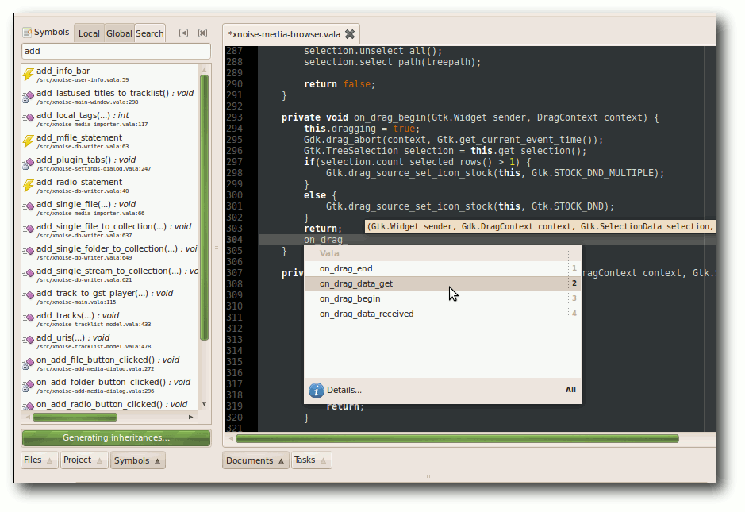

freiesMagazin Januar 2011 (ISSN 1867-7991)
Topthemen dieser Ausgabe
Plasma erobert die Welt
Die Desktop-Shell Plasma ist die Kernkomponente der KDE-Workspaces. Neben den bekannten Workspaces für Desktop, Netbook und der in Entwicklung befindlichen Mobile-Shell bietet Plasma noch viel mehr. Dieser Artikel schaut hinter die Kulissen der Benutzeroberfläche und beleuchtet das Framework zum Erstellen von Workspaces, Applets und die Integration von Plasma in Anwendungen, welche keine Desktop-Shell sind. (weiterlesen)
KTurtle – Programmieren lernen mit der Schildkröte
Mit dem Programm KTurtle kann man auf spielerische Art die Grundlagen der Programmierung erlernen. KTurtle ist dabei durchaus für Kinder geeignet, bietet aber auch Jugendlichen und Erwachsenen genug Möglichkeiten und Anreize, sich mit dem Programm und dem Thema Programmierung zu befassen. (weiterlesen)
Heimautomatisierung für Hardwarebastler
Wer gerne und viel eigene Hardware entwickelt, hat in der Regel das Problem, dass er nicht auch noch die zusätzlich benötigte Software entwickeln kann oder möchte. Da es ohne diese aber oftmals nicht geht, sind intelligente und einfach einzusetzende Lösungen gefragt. Eine dieser Lösungen ist die OpenAPC-Software, welche in dem Artikel vorgestellt werden soll. (weiterlesen)
Zum Index
Inhalt
Linux allgemein
Plasma erobert die Welt
Der Dezember im Kernelrückblick
Anleitungen
Internet-Sharing im Netzwerk
Python – Teil 4: Klassenunterschiede
Programmieren mit Vala
PDFs verkleinern mit pdfsizeopt
Software
Programmieren lernen mit KTurtle
Der Grafikeditor Ipe
Hardware
Heimautomatisierung für Hardwarebastler
Linux als ISDN-Telefon
Magazin
Editorial
Veranstaltungen
Vorschau
Konventionen
freiesMagazin-Index 2010
Impressum
Zum Index
Editorial
Ein neues Jahr beginntUmstellung auf Creative-Commons-Lizenz
Normalerweise setzt man erst zu Beginn eines neuen Jahres Veränderungen um, damit man eine klare Trennung zwischen Neu und Alt hat. Wir haben uns aber nicht daran gehalten und bereits in der Dezemberausgabe von freiesMagazin die verwendete Lizenz von der GNU Free Documentation License (GFDL) [1] auf die Creative-Commons-Lizenz CC-BY-SA 3.0 Unported [2] umgestellt. Die Gründe dafür hatten wir im letzten Editorial genannt, wir wollten aber auch Ihre Meinung zu der Umstellung hören und hatten deswegen eine Umfrage zu dem Thema gestartet [3]. Die Resonanz auf die Umstellung war sehr gut, so begrüßt über die Hälfte der 277 Umfrage-Teilnehmer die neue CC-Lizenz. Weiteren 34 % ist dabei sogar egal, welche Lizenz wir nutzen, Hauptsache sie ist frei. Dennoch gab es auch einige kritische Stimmen, denn 6 % der Teilnehmer hätten sich eine andere CC-Lizenz gewünscht. In den Kommentaren wurde dabei vor allem eine fehlende NonCommercial-Klausel beanstandet. Diese NC-Klausel verhindert eine kommerzielle Verwertung des CC-lizenzierten Werkes. Das heißt, Artikel aus freiesMagazin bzw. das Magazin als Ganzes dürften beispielsweise nicht ohne Weiteres von einer kommerziellen Zeitung übernommen und abgedruckt werden (wie dies des Öfteren bei Artikeln aus freiesMagazin vorkommt). Für uns ist diese Klausel aber eine unnötige Beschränkung der Freiheit. Wenn jemand das Wissen aus freiesMagazin verbreiten möchte, darf er das und er kann damit auch Geld verdienen. Uns geht es bei freiesMagazin vorrangig um die freie Verbreitung von Wissen. Und wenn ein kommerzielles Magazin (diese müssen die Artikel ebenfalls unter der gleichen CC-Lizenz veröffentlichen) uns dabei helfen möchte, begrüßen wir dies natürlich und wollen keine unnötigen Lizenzsteine in den Weg legen. Dennoch finden wir es interessant, dass ein Teil unserer Leser (bzw. allgemein der Freie-Software-Gemeinschaft) Freiheit immer als Gegenteil von Kommerz ansieht, dabei können beide Konzepte auch zusammenarbeiten.Sintel-Gewinnspiel
Letzten Monat starteten wir auch ein kleines Gewinnspiel zum Open-Source-Film „Sintel“. Interessant ist, dass auf den Hinweis im Editorial kaum jemand reagiert hat. Erst, als wir auch auf unserer Webseite explizit auf das Gewinnspiel hingewiesen haben [4], trafen mehrere Lösungsvorschläge ein. Man könnte daraus fast schließen, dass niemand das Editorial liest, aber das wollen wir natürlich niemandem unterstellen. Die Gewinner des Sintel-Gewinnspiels sind inzwischen bekannt gegeben [5]. Und auch wenn es nur zwei richtige Einsendungen gab, freuen sich die beiden Gewinner hoffentlich bereits über ihre „The Nuri“-CD. An der Stelle sei angemerkt: Es gibt in dieser Ausgabe von freiesMagazin wieder ein Gewinnspiel. Wir verraten dieses Mal nicht, in welchem Artikel, und wir werden diesmal auch nicht extra auf der Webseite darauf hinweisen. Der aufmerksame Leser wird es aber sicherlich finden. :)Dritter Programmierwettbewerb beendet
Wie man auf der freiesMagazin-Webseite bereits lesen konnte [6], ist der dritte Programmierwettbewerb beendet worden. Die Teilnehmerzahl liegt zwar etwas unter unseren Erwartungen, dennoch sind in den letzten Tagen vor Einsendeschluss immerhin noch einige KIs eingereicht worden, sodass nun sechs Bots gegeneinander antreten. Die Gewinner des Wettbewerbs werden im Januar auf der Webseite bzw. im Februar im Magazin bekannt gegeben.Index 2010
Gesondert wollen wir auch noch auf den freiesMagazin-Index 2010 hinweisen. Wie jedes Jahr finden Sie diesen am Ende der Januarausgabe. Im Index sind nach Themengebieten alle Artikel gelistet, die 2010 in freiesMagazin veröffentlicht wurden. Und nun wünschen wir Ihnen viel Spaß mit der ersten Ausgabe im neuen Jahr 2011. Ihre freiesMagazin-Redaktion Links[1] http://www.gnu.org/licenses/fdl.html
[2] http://creativecommons.org/licenses/by-sa/3.0/deed.de
[3] http://www.freiesmagazin.de/20101205-umfrage-freiesmagazin-mit-cc-lizenz
[4] http://www.freiesmagazin.de/20101207-sintel-gewinnspiel
[5] http://www.freiesmagazin.de/20101212-gewinner-des-sintel-gewinnspiels
[6] http://www.freiesmagazin.de/20101220-dritter-programmierwettbewerb-beendet
Das Editorial kommentieren
Zum Index
Plasma erobert die Welt
von Martin Gräßlin Die Desktop-Shell Plasma ist die Kernkomponente der KDE-Workspaces [1]. Neben den bekannten Workspaces für Desktop, Netbook und der in Entwicklung befindlichen Mobile-Shell bietet Plasma noch viel mehr. Dieser Artikel schaut hinter die Kulissen der Benutzeroberfläche und beleuchtet das Framework zum Erstellen von Workspaces, Applets und die Integration von Plasma in Anwendungen, welche keine Desktop-Shell sind.Die Plasma-Workspaces
Plasma ist den meisten Anwendern als einer der primären Workspaces [1] der KDE-Community bekannt. Aktuell stehen den Anwendern entweder eine für den Einsatz am Desktop oder aber eine für Netbooks angepasste Version zur Verfügung. Die Entscheidung, welche zu verwenden ist, wird zum Beispiel in Kubuntu 10.10 dem Benutzer komplett abgenommen [2]. Das Installationsprogramm erkennt den Formfaktor und wählt automatisch die passende Version aus. Der Wechsel der Version ist später weiterhin über die Systemeinstellungen nur einen Klick entfernt.
Wechsel der Shell über die Systemeinstellungen.
Das für den Anwender sichtbare Plasma ist eine komplette Desktopumgebung, bestehend aus der „Desktop-Shell“, dem Fenstermanager, Systemeinstellungen etc. Vergleichbar also mit GNOME, XFCE [3], LXDE [4] oder der noch in Entwicklung befindenden GNOME Shell [5]. Die KDE-Workspaces sind jedoch nur ein kleiner Bereich der KDE-Software-Compilation, welche halbjährlich veröffentlicht wird. Plasma ist dabei nicht nur prominent über die Workspaces vertreten, sondern auch ein wichtiger Bestandteil der KDE-Entwicklungsplattform und von immer mehr KDE-Anwendungen.
libplasma – Framework zur Entwicklung von Workspaces
Primär ist die libplasma genannte Entwicklungskomponente ein Framework zum Erstellen von um Applets [6] (auch bekannt als Widgets, Gadgets, Plasmoids oder Miniprogramme) zentrierten Workspaces. So ist es mit vergleichsweise geringem Aufwand möglich, eine für einen speziellen Formfaktor angepasste Benutzeroberfläche zu erstellen und dabei die elementaren Bestandteile wiederzuverwenden [7]. So hätte sich die neue Netbook-Oberfläche Unity von Ubuntu 10.10 (Maverick Meerkat) mit Plasma bedeutend einfacher unter Wiederverwendung bestehender Bestandteile umsetzen lassen – mit dem Vorteil, dass das komplette zugrundeliegende System bereits seit Jahren getestet und im Einsatz ist. Ein für den Desktop geschriebenes Applet funktioniert auch auf einem Notebook oder einem Smartphone. Die aufwändige Reimplementierung aller benötigten Applets entfällt somit. Plasma kennt den Formfaktor und die Applets können sich diesem anpassen. Dies kann sogar auch auf dem Desktop beobachtet werden. Lebt ein Applet in der Kontrollleiste, wird es auf die minimal nötige Größe reduziert und zeigt die eigentlichen Informationen erst nach Klick in einem „Extender” an. Auf der Arbeitsfläche oder dem Dashboard ist genügend Platz vorhanden und das Applet kann direkt alle Informationen anzeigen.Device Notifier auf Desktop und aus dem Panel expandiert.
Ein wichtiger Aspekt bei der Verwendung einer Applet-Technologie ist natürlich deren Flexibilität. Auch in diesem Punkt kann das Plasma-Framework glänzen. So unterstützt es nicht nur die eigenen „Plasmoide” und Superkaramba-Widgets aus der KDE3-Ära [8], sondern auch Google-Gadgets und dank der Integration von WebKit (dem von Apple initiierten Fork der KDE-Web-Rendering-Engine KHTML) in Qt auch Mac OS X Dashboard-Widgets. KDEs eigene Applets (Plasmoids) können in einer Vielzahl von Sprachen geschrieben werden. Die im Standardumfang enthaltenen Applets sind wie das Framework selbst in C++ mit den Qt-Bibliotheken geschrieben. Es stehen aber auch über sogenannte „Scriptengines” Anbindungen an andere Sprachen wie zum Beispiel Python, Ruby oder JavaScript (ECMA-Script) zur Verfügung. Besonders die JavaScript-Anbindung ist hierbei herauszuheben, da sie ein komplettes Absichern des Frameworks vor dem Applet ermöglicht (Sandbox [9]). Auch das App-Store-Konzept lässt sich über JavaScript bewerkstelligen. In JavaScript geschriebene Applets können auf KDE-Look.org [10] hochgeladen und über das „Get Hot New Stuff“-Framework (GHNS) heruntergeladen und installiert werden. Verwendet man zur Entwicklung des Applets die Anwendung PlasMate [11], so kann die Veröffentlichung vollautomatisch geschehen. Das GHNS-Framework und die zugrunde liegende Technologie Open Collaboration Services (OCS) [12] werden in Zukunft auch für den App-Store in Nokias und Intels neuem Smartphone-Betriebssystem MeeGo eingesetzt [13].
Neue Hintergrundbilder über GHNS.
JavaScript wird generell eine immer wichtigere Grundtechnologie in der weiteren KDE-Welt, wie man gerade auch am Plasma-JavaScript-Programmierwettbewerb [14] sehen konnte. Über die Desktop-Scripting-Konsole ist es möglich, die Arbeitsfläche grundlegend mit Hilfe von JavaScript zu konfigurieren. Dies ist ein wichtiger Aspekt für große Installationen, um z. B. alle Rechner mit den gleichen Applets zu versehen oder ein Corporate-Design einzusetzen. Diese Lösung, über JavaScript den Desktop initial einzurichten, wird z. B. auch von Distributionen wie Kubuntu eingesetzt. Auch außerhalb von Plasma wird JavaScript eine immer beliebtere Scripting-Komponente. So wird der Fenstermanager in 4.6 dank eines „Google Summer of Code“-Projektes eine Schnittstelle haben, um Skripte auszuführen. Dies ermöglicht eine viel flexiblere Beeinflussung des Fensterverhaltens als es mit den bisherigen statischen Fensterregeln möglich ist [15].
Plasma für Applet-zentrierte Anwendungen
Das für Plasma entwickelte Applet-Framework ist jedoch nicht nur für den Einsatz in Applet-zentrierten Workspaces interessant. Auch viele Anwendungen nutzen auf verschiedene Art und Weise Komponenten, welche einem Applet-zentrierten Ansatz entsprechen. Für solche Anwendungen kann Plasma auch eine interessante Erweiterung sein. Eine der ersten Anwendungen, die auf Plasmas Appletkonzept setzte, war die Neuimplementierung von Amarok 2. Die „Context Area” verwendet Applets, um zusätzliche Informationen wie Songtexte oder ähnliche Interpreten anzuzeigen. Hierbei profitiert Amarok von der Entwicklung, welche bereits in Plasma investiert wurde und muss nicht das Rad neu erfinden.Amarok nutzt Plasma für den Kontextbereich.
Im Rahmen des diesjährigen Google Summer of Code gab es mehrere Projekte, um Plasma besser in anderen Anwendungen verfügbar zu machen. Als Beispiel sei hier die KDE-PIM-Suite Kontact [16] genannt, welche eine Übersicht über neue E-Mails, anstehende Termine etc. enthält. Ein Bereich also, der sich sehr gut für den Einsatz von Applets eignet. Durch die aktuell erfolgende Portierung von Kontact auf das Akonadi-Framework [17] ist eine Überarbeitung dieser Übersicht sowieso notwendig. Durch die Verwendung von Plasma können nicht nur die Technologie für Applets, sondern auch die Applets selbst wiederverwendet werden. So befindet sich mit Lion Mail [18] ein E-Mail-Benachrichtigungsapplet in Entwicklung, welches sich hervorragend sowohl für den Einsatz im Desktop, dem Systemabschnitt als auch in der Kontact-Übersicht eignet. Dieses sehr vielseitige Applet ist im Übrigen nicht an die Verwendung von KMail gekoppelt, sondern kann auch dank dem Einsatz von Akonadi in Kombination mit Mozilla Thunderbird oder komplett Web-basierten Lösungen wie Google Mail eingesetzt werden.
Plasma für bestehende Anwendungen
libplasma bietet den Anwendungsentwicklern nicht nur mit dem Appletsystem eine einfache Erweiterungsmöglichkeiten an, sondern hat noch bedeutend mehr im Angebot. So erlaubt Plasmas Themeingsystem, Komponenten flexibel mit SVG zu gestalten [19]. Dies kann auch von anderen Anwendungen verwendet werden. Als Beispiel sei hier die Fensterdekorationen-Themeengine Aurorae genannt, welche komplett auf dem SVG System von libplasma aufbaut. Ein Designer kann also mit nur einer Technologie alle Aspekte des Workspace gestalten. Das Plasma-Theme selbst wird auch in den Desktopeffekten von KWin verwendet und hat dort spezifischen Rendering-Code ersetzt. Dadurch konnte sowohl das Aussehen vereinheitlicht werden als auch die Codebasis verschlankt werden. Zusätzlich kann dadurch ein Plasma-Theme auch das Aussehen der Effekte beeinflussen, was zuvor nicht möglich war.Ausblick in die Zukunft
Auch wenn die Entwicklung des Plasma Desktop Workspaces eigentlich abgeschlossen ist, lässt die Entwicklungsgeschwindigkeit nicht nach und der Einsatz neuer Technologien steht bereits in den Startlöchern. In der Ende Januar / Anfang Februar erscheinenden Version 4.6 wird die deklarative Sprache Qt Quick (auch als QML bekannt) [20] in Plasma Einzug halten. Mittels QML kann die Entwicklung der Oberfläche komplett von der Logik entkoppelt werden. Somit können Designer leichter in den Entwicklungsprozess eingebunden werden. Auch ist es einfacher, pro Formfaktor eine angepasste Oberfläche bereitzustellen [21], wie z. B. eine fingerfreundliche Oberfläche für mobile Geräte. Auch darüber hinaus haben die Entwickler sich schon Gedanken über die Entwicklung der nächsten Jahre gemacht [22].Fazit
Plasma ist viel mehr als „nur ein Desktop”, nämlich ein Framework, um Desktops zu erstellen und somit eine gute Option für Anpassungen an Tablets und andere aufkommende Formfaktoren. Dieses Konzept überwindet das bisher übliche Programmiermodell, pro Geräteklasse eine eigene Benutzeroberfläche zu schreiben und ist so bisher einmalig. Darüber hinaus bietet Plasma auch Anwendungen eine Vielzahl von Möglichkeiten, die vom KDE-Team entwickelte Technologie weiterzuverwenden, vom Einsatz der Applets eingebettet in die Anwendung wie in Amarok bis hin zur Verwendung der Theme-Elemente. Mittels Plasma können viele Anwendungen leicht und schnell einen modernen Touch erhalten. Plasma ist bereit, die Welt zu erobern. Links[1] http://www.kde.org/workspaces
[2] http://www.kubuntu.org/news/10.10-release
[3] http://www.xfce.org/
[4] http://www.lxde.org/
[5] http://live.gnome.org/GnomeShell
[6] http://de.wikipedia.org/wiki/Widget
[7] http://aseigo.blogspot.com/2010/08/writing-plasma-shell.html
[8] http://www.kde.org/applications/utilities/superkaramba/
[9] http://de.wikipedia.org/wiki/Sandbox
[10] http://kde-look.org
[11] http://techbase.kde.org/Projects/Plasma/PlasMate
[12] http://www.open-collaboration-services.org/
[13] http://kdenews.org/2010/11/02/frank-karlitschek-introduces-bretzn
[14] http://plasma.kde.org/
[15] http://rohanprabhu.com/?p=116
[16] http://userbase.kde.org/Kontact
[17] http://pim.kde.org/akonadi/
[18] http://vizzzion.org/blog/2010/09/getting-email-done-the-stack-and-the-heap-of-lion-mail/
[19] http://techbase.kde.org/Projects/Plasma/Theme
[20] http://en.wikipedia.org/wiki/QML
[21] http://www.notmart.org/index.php/Software/One_plasmoid_3_platforms
[22] http://aseigo.blogspot.com/2010/10/plasma-in-18-24-months.html
| Autoreninformation |
| Martin Gräßlin ist Maintainer des Fenstermanager der KDE-Plasma-Workspaces und arbeitet regelmäßig auch mit libplasma, insbesondere durch die Arbeit an Aurorae und Desktopeffekten. |
Zum Index
Der Dezember im Kernelrückblick
von Mathias Menzer Basis aller Distributionen ist der Linux-Kernel, der fortwährend weiterentwickelt wird. Welche Geräte in einem halben Jahr unterstützt werden und welche Funktionen neu hinzukommen, erfährt man, wenn man den aktuellen Entwickler-Kernel im Auge behält.Kernel 2.6.37
Der November endete mit einer kleinen Enttäuschung: Ein endlich beseitigt geglaubter Fehler in der Behandlung von Verzeichnisauflistungen des Netzwerkdateisystems NFS erwies sich als äußerst widerstandsfähig und konnte auch mit einigen in -rc4 (siehe „Der November in Kernelrückblick“, freiesMagazin 12/2010 [1]) aufgenommenen Patches nicht beseitigt werden. Auch -rc5 [2] konnte hier keine Abhilfe schaffen. Dafür können nun Schnappschüsse des verteilten Dateisystems Ceph [3] als Block-Devices in Unterverzeichnisse unterhalb des zugehörigen Abbildes eingehängt werden, was die Übersichtlichkeit im Umgang damit erhöhen soll. 2.6.37-rc6 [4] brachte dann eine Erweiterung des GPIO-Treibers (General Purpose Input/Output – Mehrzweck-Ein/Ausgabe), mittels derer nun Geräte an der Schnittstelle verwendet werden können, die den Kernel nicht mittels eines Interrupts auf ein angelegtes Signal aufmerksam machen können, wie zum Beispiel ein einfacher Schalter. Ist diese neue Funktion aktiviert, wird die Schnittstelle permanent auf Signaländerungen überwacht. Kurz vor den Feiertagen setzte Torvalds der Entwicklergemeinde dann den -rc7 [5] vor. Mit diesem wurden Änderungen der PCI-Treiber rückgängig gemacht, die leider zu Problemen führten. Auch der Treiber für Intel-Grafikchips bereitet derzeit Probleme, ebenso das Entfernen des Big Kernel Lock aus dem V4L-Treiber. Wenigstens letzteres beschränkte sich in erster Linie auf die Leistung des Video-Treibers und soll mittels einiger Änderungen des Entwicklers Hans Verkuil behoben werden. Ein weiterer großer Wurf dieser Vorabversion ist ein größerer Patch, mit dem ein Fehler der Funktion NO_HZ vollständig ausgemerzt werden soll. Dieser äußert sich in der fehlerhaften Anzeige der Systemlast. NO_HZ soll das zeitgesteuerte Aufwachen des Prozessorkerns gegen einen bedarfsgesteuerten Aufwachzyklus tauschen und damit den Energiehunger des Prozessors dämpfen.Änderung der Langzeit-Kernelpflege
Bislang galt beim Kernel immer die Devise „The latest is the greatest“ (Der Neueste ist der Beste) und entsprechend trägt automatisch immer die zuletzt veröffentlichte Version das Prädikat „stable“; zu deutsch „stabil“ im Sinne von „beständig“ oder „sicher“ [6]. Das bedeutet grundsätzlich, dass bei Erscheinen eines neuen Kernels zügig auf diesen aktualisiert werden sollte. Dazu kamen noch die von Greg Kroah-Hartman über längere Zeit gepflegten Versionen, „Longterm Releases“ genannt, dies sind derzeit 2.6.27, 2.6.32 und 2.6.35. Welche Versionen zum Longterm Release werden, entscheidet Kroah-Hartmann selbst. Jedoch erhält er zunehmend Anfragen, die jeweils aktuelle Version in die Langzeitpflege aufzunehmen. Aus Zeitgründen zieht Kroah-Hartman hier nun einen Strich unter die Praxis der Langzeit-Veröffentlichungen [7] und pflegt künftig nur noch die aktuellsten ein oder zwei Versionen, um den Nutzern einen sanften Umstieg ohne große Hektik ermöglichen zu können. Die bereits angekündigten und derzeit gepflegten Longterm-Versionen werden entsprechend weiter gepflegt, werden jedoch eventuell andere Betreuer erhalten. Dies wird zum Beispiel 2.6.35 betreffen, der künftig von Andi Kleen gepflegt wird. Auf der offiziellen Kernel-Seite [8] sind diese Versionen als „longterm“ gekennzeichnet.Freier Kernel für Debian
Als „freies“ Betriebssystem erfreut sich Linux einiger Beliebtheit. Jedoch findet sich bereits im offiziellen Linux-Kernel stellenweise proprietärer Code, der in Form von binären Blobs vorliegt. So laden zum Beispiel Netzwerktreiber beim Start die Firmware auf den Chipsatz der Netzwerkkarte, auch bei Grafiktreibern ist dies Praxis. Das Debian-Projekt hat nun den Kernel selbst von diesen unfreien Bestandteilen befreit und bringt mit der kommenden Debian-Version 6.0 „Squeeze“ einen vollständig freien Kernel mit [9]. Während die Idealisten jubeln, müssen Besitzer von Hardware, für die keine vollständig freien Treiber zur Verfügung stehen, auf Squeeze jedoch nicht verzichten. In den „non-free“-Repositories stehen alternative CD-Abbilder zum Download bereit, die die unfreien Treiber beinhalten.Jahresbericht
Den jährlichen Bericht über die Kernel-Entwicklung legte die Linux Foundation im Dezember vor [10]. Er versucht die Fragen „Wie schnell geht es voran?“, „Wer macht es“?, „Was machen sie?“ und „Wer fördert es?“ zu beantworten. Daraus erschließt sich eine mittlere Entwicklungszeit von etwa 81 Tagen pro Kernelversion, zumindest in den letzten beiden Jahren hat sich dieser Zeitraum eingebürgert. Die Zahl der Patches gibt nach einem Spitzenstand von fast 12.000 bei 2.6.30 wieder leicht zurück auf etwa 9800 bei 2.6.35, dies lässt sich unter anderem damit erklären, dass sich die Entwicklung einiger Subsysteme, darunter die Dateisysteme ext4 und btrfs mittlerweile stabilisiert hat und nun weniger Arbeit erfordert. Mittlerweile über 13 Millionen Quelltext-Zeilen verteilen sich auf über 33.000 Dateien. Die Anzahl der aktiven Entwickler ist wieder gestiegen. Nach einem kurzen Zwischenhoch von 1248 bei 2.6.32 sank die Zahl auf 1150 bei 2.6.34, im Entwicklungszyklus von 2.6.35 kamen wieder 37 neue hinzu. Insgesamt haben über die letzten Jahre 6117 Entwickler zum Linux-Kernel beigetragen. Dagegen sinkt die Zahl der beteiligten Unternehmen seit 2.6.32 von 259 auf 184 (2.6.35) weiter ab. Die absoluten Top-Entwickler sind David S. Miller und Ingo Molnar, der Betreuer des Schedulers. Unter den Firmen, die die Linux-Entwicklung unterstützen, liegt Red Hat mit 12 % aller Änderungen vorne, gefolgt von Novell mit 7 % und IBM mit 6,9 %. 6,4 % der Änderungen am Kernel konnten keinem Unternehmen zugeordnet werden, mit 18,9 % liegt ein doch noch recht großer Anteil bei „freien“ Entwicklern [11].|
Kurz erläutert: „Abbilder und Schnappschüsse“ Ein Abbild (Englisch: Image) ist eine Eins-zu-Eins-Kopie eines Dateisystems oder Datenträgers. Es kann dazu verwendet werden, ein Dateisystem zu sichern, indem ein Abbild zu einem bestimmten Zeitpunkt erstellt wird und dieses anschließend jederzeit wieder auf den Datenträger zurückgespielt werden kann. Es erscheint dann gegenüber dem Zeitpunkt, zu dem es erstellt wurde, unverändert. Abbilder werden auch von CDs erstellt und verbreitet, zum Beispiel für die Installations-CD der Lieblingsdistribution. Manchmal wird der Begriff Abbild auch für im Netzwerk abgelegte Datenspeicher verwendet. Schnappschüsse (Englisch: Snapshot) stellen ebenso den Zustand eines Dateisystems zu einem bestimmten Zeitpunkt dar, werden jedoch nicht zu diesem Zeitpunkt vollständig erstellt. Es werden vielmehr die Änderungen im Dateisystem zwischen dem Zeitpunkt des Schnappschusses und dem jetzigen mitprotokolliert. Dadurch kann ein Schnappschuss im laufenden Betrieb durchgeführt werden, ohne dass Zugriffe darauf unterbunden werden müssten. |
Links
[1] http://www.freiesmagazin.de/freiesMagazin-2010-12
[2] http://lkml.org/lkml/2010/12/7/9
[3] http://ceph.newdream.net/
[4] http://lkml.org/lkml/2010/12/15/457
[5] http://lkml.org/lkml/2010/12/21/226
[6] http://www.dict.cc/?s=stable
[7] http://lkml.org/lkml/2010/12/2/388
[8] http://master.kernel.org/
[9] http://www.pro-linux.de/news/1/16516/debian-60-soll-vollstaendig-freien-linux-kernel-bringen.html
[10] http://www.linuxfoundation.org/docs/lf_linux_kernel_development_2010.pdf
[11] http://www.pro-linux.de/news/1/16462/kernel-jahresbericht-der-linux-foundation.html
| Autoreninformation |
| Mathias Menzer wirft gerne einen Blick auf die Kernel-Entwicklung, um mehr über die Funktion von Linux zu erfahren und um seine Mitmenschen mit seltsamen Begriffen und unverständlichen Abkürzungen verwirren zu können. |
Zum Index
Teile und herrsche – Internet-Sharing im Netzwerk
von Oliver Johanndrees Linux-User haben das Bedürfnis sich zu versammeln, und wenn das geschieht, dann ist Hardware im Spiel. Die will natürlich vernetzt werden. Doch dem nicht genug: Vernetzt ist nur die halbe Sache, noch schöner wäre es, wenn man ins Internet gehen könnte. Um die Sache perfekt zu machen, wäre ein Zugang zum Internet für alle Teilnehmer die Krönung des Konstrukts. Den Laptop unter dem Arm und ein Hoch auf die Mobilität, wird sich auf jedem Treffen jemand finden, der einen UMTS-Stick [1] dabei hat oder sein Handy per Tethering [2] anbinden kann. Da wird dann schnell alles zu einem eigenen Netzwerk zusammengesteckt und die Leitungen glühen … Um dies z. B. beim allmonatlichen Treffen der Linux User Group Tux-Lummerland zu realisieren, muss einer der Laptops als Router herhalten, der seinen angeschlossenen UMTS-Stick für alle verfügbar macht. Wie das geht, wird im Anschluss beschrieben.Aufgabenstellung
Ein eigenes Netzwerk soll erstellt werden: Alle PCs sollen per DHCP [3] eine IP-Adresse in diesem Netz bekommen, damit man sich gegenseitig „sehen“ kann, und alle sollen Zugang zum Internet bekommen. Man braucht also einen Rechner, der zum einen diesen DHCP-Dienst anbietet und zum anderen gleichzeitig die Verbindung zum Internet herstellt. Dieser PC oder der Laptop agiert dann also als Router.Das lokale Netzwerk mit einem zentralen PC als Verwalter des Internet-Zugangs.
Vorbereitung
Die nachfolgenden Aktionen müssen ausschließlich auf diesem Router durchgeführt werden, um die Aufgabe zu lösen. Sinnvoll ist es, dies für die Dauer der Installation und Konfiguration mit Root-Rechten durchzuführen. Nach dem „Einstöpseln“ des UMTS-Sticks sollte der Konsolenbefehl
# ifconfig |
Installation des DHCP-Servers
Damit alle anderen Geräte und Laptops, die an das Netzwerk gestöpselt werden, eine IP-Adresse vom zukünftigen PC-Router bekommen, wird zunächst ein DHCP-Server installiert. Dieser „Dienst“ wartet darauf, dass sich ein neues Gerät bei ihm meldet und um eine Adresse aus einem Adress-Pool bittet, den er verwaltet. Wie groß dieser Adress-Pool ist, das lässt sich in der Konfigurationsdatei des DHCP-Servers einstellen. Die Installation des DHCP-Servers geschieht unter Ubuntu durch das Paket dhcp3-server. Freunde von openSUSE nutzen das Paket dhcp-server. Auf anderen Distributionen wird das Paket einen ähnlichen Namen haben und ebenfalls über die Paketverwaltung zu installieren sein.Konfiguration
Nach dem Einspielen sind zunächst zwei Dateien anzupassen. Der DHCP-Server muss wissen, über welche Netzwerkkarte er mit dem Rest des Netzwerkes verbunden ist. In der Regel ist die erste Netzwerkkarte mit eth0 bezeichnet. Die Datei /etc/default/dhcp3-server muss also das LAN-Device beinhalten, das für den DHCP-Service gedacht ist. Das geschieht durch den Eintrag INTERFACES="eth0" in der Datei – prinzipiell ist es die einzige Zeile dort. Da der DHCP-Server unter openSUSE anders heißt, wird auch die Konfigurationsdatei etwas anders lauten. Anschließend muss definiert werden, welche IP-Adressen im Netzwerk vergeben werden sollen, ein Bereich „von – bis“ also, oder auch Adress-Pool genannt. Hierzu wird unter Ubuntu die Konfigurationsdatei des DHCP-Servers editiert. Sie heißt /etc/dhcp3/dhcpd.conf. Bei anderen Distributionen kann sie ggf. anders lauten. Ein abgespecktes Beispiel:
# Sample configuration file for ISC dhcpd
# for Debian
# option definitions common to all supported
# networks...
option domain-name "lug-tux-lummerland.org";
option domain-name-servers 217.237.151.205, 217.237.148.70;
default-lease-time 600;
max-lease-time 7200;
# This is a very basic subnet declaration.
subnet 192.168.200.0 netmask 255.255.255.0 {
range 192.168.200.10 192.168.200.50;
option routers 192.168.200.1;
}
|
auto eth0 iface eth0 inet static address 192.168.200.1 netmask 255.255.255.0 gateway 192.168.200.1 |
# /etc/init.d/networking restart |
# /etc/int.d/dhcp3-server start |
Verbindung bitte
Nun zu Teil 2 der Aufgabenstellung: die Bereitstellung eines UMTS-Sticks oder eines WLAN-Zugangs auf dem PC-Router für alle anderen Netzwerkteilnehmer. Man sagt: „90% aller Fehler im Netz beruhen zumeist auf fehlerhafter Namensauflösung. Die restlichen 10% beruhen auf fehlerhafter Namensauflösung.“ Und damit später die DNS-Namensauflösung sauber funktioniert, muss ein DNS-Server auf dem PC-Router installiert sein. Dieser macht nichts anderes, als dafür zu sorgen, dass eine von Menschen lesbare Internetadresse oder der Name eines öffentlichen Servers korrekt in eine maschinenlesbare IP-Adresse aufgelöst wird. Der DNS-Server bind erfüllt dies und ist unter Ubuntu über die Paketverwaltung durch das Paket bind3 zu installieren; unter openSUSE heißt das Paket bind. Mehr braucht man nicht zu tun, es ist kein weiterer Eingriff nötig.Wohin soll's denn gehen?
Anschließend muss dem PC-Router mitgeteilt werden, dass er alle eingehenden Anfragen zum entsprechenden Internet-Device weiterleiten soll. Dazu muss man nun das sogenannte IP-Forwarding einschalten. Dies geschieht durch den Konsolen-Befehl
# echo 1 > /proc/sys/net/ipv4/ip_forward |
# echo 1 > /proc/sys/net/ipv4/ip_dynaddr |
#!/bin/bash iptables -A POSTROUTING -t nat -o ppp0 -j MASQUERADE iptables -A INPUT -m state --state NEW,INVALID -i ppp0 -j DROP iptables -A FORWARD -m state --state NEW,INVALID -i ppp0 -j DROP |
# chmod 755 /etc/init.d/router |
#!/bin/bash # Bereitstellen des Rechners als Internet-Router # Als 'device' ist der UMTS-Stick mit 'ppp0' oder # ein WLAN-Device mit 'wlan0' einzusetzen. device=ppp0 # DHCP-Server starten /etc/init.d/dhcp3-server start # IP-Forwarding einschalten echo 1 > /proc/sys/net/ipv4/ip_forward echo 1 > /proc/sys/net/ipv4/ip_dynaddr # NAT setzen, unerlaubten Traffic von aussen blocken iptables -A POSTROUTING -t nat -o $device -j MASQUERADE iptables -A INPUT -m state --state NEW,INVALID -i $device -j DROP iptables -A FORWARD -m state --state NEW,INVALID -i $device -j DROP |
Mehr Automatismus bitte
Natürlich will man nicht alle Schritte einzeln nacheinander durchführen. Also bietet es sich an, alle notwendigen Schritte in einem Skript zu vereinen. Beispielhaft zeigt das obige Skript die Zusammenfassung der erwähnten Schritte. Bevor man damit arbeiten kann, muss im Skript router.sh nur die Zeile device=ppp0 auf das richtige Gerät angepasst werden. Hier eine kurze Erläuterung zum Skript: Es startet im ersten Schritt den DHCP-Server, dann werden die Variablen für das IP-Forwarding gesetzt. Abschließend führt das Skript die iptables-Befehle mit dem richtigen Device aus. Legt man nun das Skript noch in den Verzeichnissen der entsprechenden Runlevel [7] [8] ab, dann kann man es auch gleich während des Startens des Rechners ausführen lassen. Ein gewisser Grad an Automatisierung ist also möglich, und man spart sich ein wenig Arbeit. Doch Vorsicht ist geboten: Ob der UMTS-Stick dann bereits eingebucht und als Gerät verfügbar ist, muss getestet werden. Daher sollten die Befehle erst ganz zum Schluss der Runlevel-Kette ausgeführt werden. Empfehlenswert ist ein Start des Skripts von Hand, nachdem sicher ist, dass auch alle Geräte verfügbar sind. Und dann gilt: viel Spaß beim gemeinsamen Surfen im eigenen Netzwerk. Links[1] http://de.wikipedia.org/wiki/UMTS-Datenkarte
[2] http://de.wikipedia.org/wiki/Tethering
[3] http://de.wikipedia.org/wiki/Dynamic_Host_Configuration_Protocol
[4] http://wiki.ubuntuusers.de/NetworkManager
[5] http://de.wikipedia.org/wiki/Iptables
[6] http://de.wikipedia.org/wiki/Network_Address_Translation
[7] http://de.wikipedia.org/wiki/Runlevel#Beispiel_Linux
[8] http://wiki.ubuntuusers.de/Dienste
| Autoreninformation |
| Oliver Johanndrees (Blog) ist langjähriger Linux-Anwender und Gründer der LUG-Erwitte. Bei den gemeinsamen Treffen ergeben sich stets interessante Aufgabenstellungen, deren Lösung auch anderen Linux-Usern helfen können. |
Zum Index
Python – Teil 4: Klassenunterschiede
von Daniel Nögel Mit Funktionen und Modulen wurden im dritten Teil dieser Einführung (siehe freiesMagazin 12/2010 [1]) zwei elementare Konstrukte zur Strukturierung von Python-Skripten vorgestellt. In diesem Teil soll nun mit Klassen ein weiteres wichtiges Konstrukt besprochen werden.Objektorientierte Programmierung
Bei der objektorientierten Programmierung (OOP [2]) handelt es sich um ein sogenanntes Programmierparadigma – also um ein bestimmtes Entwurfsmuster beim Programmieren. Bei der OOP wird versucht, Daten und Funktionen zu sinnvollen Einheiten zusammenzufassen und an sogenannte Objekte zu binden. Neben „Objekten” gibt es zumindest noch drei weitere wichtige Begriffe im Zusammenhang mit objektorientierter Programmierung, die im Folgenden immer wieder auftauchen: „Klassen“, „Attribute“ und „Methoden“. Als Beispiel sollen für eine Rennsimulation unterschiedliche Autos zur Verfügung stehen. Diese Autos unterscheiden sich in Länge, Gewicht, Geschwindigkeit, Beschleunigung, Farbe etc. Wenn nun 20 unterschiedliche Autos gleichzeitig um die Wette fahren, müssen viele Daten verwaltet werden. Es bietet sich an, diese Daten jeweils zusammenzufassen und zu bündeln. So könnte es beispielsweise eine Objekt „Auto“ mit folgenden Eigenschaften geben:- Länge
- Gewicht
- Geschwindigkeit
- Beschleunigung
- Farbe
class Car(object):
def __init__(self, speed=0, max_speed=140, acceleration=5, color="grey"):
self.speed = speed
self.max_speed = max_speed
self.acceleration = acceleration
self.color = color
def brake(self):
self.speed -= self.acceleration
print "Current Speed: {0}".format(self.speed)
def accelerate(self):
self.speed += self.acceleration
print "Current Speed: {0}".format(self.speed)
def honk(self):
print "Tuuuuut Tuuuut"
|
Klassen in Python
Das Beispiel BeispielKlasseCar.py zeigt, wie man eine (leicht abgewandelte) Auto-Klasse in Python umsetzt. In Zeile 1 wird die Klasse definiert. Dies wird durch das Schlüsselwort class gekennzeichnet. In Klammern dahinter wird angegeben, von welchen anderen Klassen die neue Klasse erben soll (siehe dazu den nächsten Abschnitt). In älteren Python-Versionen sollte hier immer von object geerbt werden – nur dann steht der volle Funktionsumfang der Klassen in Python zu Verfügung. Wer bereits Python >= 3 verwendet, verzichtet auf diese Angabe und hat dennoch den vollen Funktionsumfang der Klassen. Wie jede Kontrollstruktur in Python wird auch der Kopf der Klasse mit einem Doppelpunkt abgeschlossen. In Zeile 2 wird die Spezialmethode __init__ definiert. Diese wird aufgerufen, wenn eine Instanz der Klasse (also ein Objekt) erstellt wird. Die Methode __init__ wird hier mit fünf Parametern definiert: self, speed, max_speed, acceleration und color. In Python muss jede Methode (egal ob Spezialmethoden wie __init__() oder eigene Methoden wie brake()) als erstes den Parameter self akzeptieren. Durch diesen Parameter kann später zu jeder Zeit auf die Attribute und Methoden eines Objektes zugegriffen werden. self ist also – wie der Name schon andeutet – eine (Selbst)Referenz des späteren Objektes. Das mag zunächst umständlich und lästig wirken – tatsächlich gibt es aber gute Gründe für dieses Vorgehen [3]. Die übrigen Parameter (speed, …, color) sind optional. Sie definieren die Standardwerte für das Auto-Objekt. In den Zeilen 3 bis 6 werden die Parameter an Klassenattribute gebunden: Erst dadurch haben die späteren Objekte auch tatsächlich die entsprechenden Eigenschaften. In Zeile 8 wird eine Methode brake() definiert. Als Klassenmethode muss auch sie den Parameter self akzeptieren. In Zeile 9 wird deutlich warum: Über diesen Parameter kann wieder auf das in Zeile 3 definierte Attribut speed zugegriffen werden. Im Fall der Methode brake() wird das Attribut speed um die Höhe des Attributs acceleration reduziert. In den Zeilen 12 und 16 werden weiterhin noch die Methoden accelerate() und honk() definiert.Klassen zum Leben erwecken
Die Klasse Car wurde definiert. Bisher gibt es aber noch keine Instanz dieser Klasse. Im Folgendem werden zwei Car-Objekte erstellt:
>>> car1 = Car() >>> car2 = Car(speed=50) >>> car1.speed 0 >>> car2.speed 50 >>> car1.accelerate() Current Speed: 5 >>> car1.accelerate() Current Speed: 10 >>> car2.brake() Current Speed: 45 >>> car1.honk() Tuuuuut Tuuuut |
>>> ferrari = Car(max_speed=280, acceleration=10, color="red") >>> trabbi = Car(max_speed=70, acceleration=2, color="blue") |
Vererbung
Vererbung ist ein weiteres mächtiges Element der OOP: Es ist damit möglich, Attribute und Methoden von anderen Klassen zu „erben“ und weitere Attribute und Methoden hinzuzufügen. So können bequem Klassen konstruiert werden, die aufeinander aufbauen und sich gegenseitig erweitern. Oben wurde bereits die Klasse Car für eine fiktive Rennsimulation definiert. Durch Vererbung lassen sich spezifischere Klassen von Autos erstellen – etwa eine Rennwagenklasse mit hoher Beschleunigung und hoher Endgeschwindigkeit:
class Racer(Car):
def __init__(self, color="red"):
Car.__init__(self, speed=0, max_speed=400, acceleration=10, color=color)
self.current_gear = 0
def honk(self):
print "Tuuuuut Tuuuut Tuuuut"
def shift_up(self):
self.current_gear += 1
print "Current gear: {0}".format(self.current_gear)
def shift_down(self):
self.current_gear -= 1
print "Current gear: {0}".format(self.current_gear)
|
>>> ferrari = Racer() >>> ferrari.honk() Tuuuuut Tuuuut Tuuuut >>> ferrari.shift_up() Current gear: 1 >>> ferrari.accelerate() Current Speed: 10 >>> ferrari.accelerate() Current Speed: 20 >>> ferrari.shift_up() Current gear: 2 |
Klassen im Einsatz
Natürlich sind weder Renn- noch Rollenspiele der primäre Einsatzzweck von Python. Es sind lediglich sehr anschauliche Beispiele dafür, wie man ausgehend von einer Basisklasse verschiedene andere Klassen entwirft. Ein etwas praxisnäheres Beispiel könnte aber eine Musikverwaltung sein. Auch hier stellt sich die Frage: Wie lässt sich die Funktionalität, die implementiert werden soll, sinnvoll strukturieren und in Klassen kapseln? Eine Musikverwaltung arbeitet in aller Regel mit einer Datenbank. Hier wäre eine eigene Klasse sicher sinnvoll. Sie hätte Methoden wie erstelle_datenbank(), finde_lied() oder trage_lied_ein(). Der Vorteil dabei: Wenn im gesamten Programm diese Schnittstellen der Datenbankklasse benutzt werden, kann sehr leicht eine zweite Datenbankklasse umgesetzt werden – etwa um auch die Unterstützung von PostgreSQL anzubieten. Da die Schnittstellen (also die verfügbaren Methoden und Attribute) bei beiden Klassen identisch sind, ist ein Austausch ohne Probleme möglich. Weiterhin benötigt die Musikverwaltung eine grafische Benutzeroberfläche (GUI). Auch diese würde in eine Klasse gekapselt werden und hätte Methoden wie zeige_dialog(), knopf_wurde_geklickt() oder eingabefeld_wurde_veraendert(). Wenn die GUI-Klasse gut entworfen wird, kann später theoretisch sehr leicht eine Ersatz-GUI entwickelt werden, etwa wenn doch Qt [4] statt GTK [5] verwendet werden soll. Diese Beispiele lassen sich leicht fortspinnen. Die Anbindung an last.fm (Attribute: benutzername, passwort; Methoden: uebertrage_gerade_gespieltes_lied() oder anmelden()) ließe sich sicher ebenso sinnvoll in einer Klasse kappseln wie etwa ein Cover-Downloader für Amazon.Alles ist eine Klasse
In Python haben Klassen aber eine noch viel grundlegendere Bedeutung, denn alle Datentypen (Zeichenketten, Ganz- und Fließkommazahlen, Listen oder Dictionaries) sind in Python Objekte. Es gibt also auch entsprechende Klassen, von denen geerbt werden kann:
class BoxiCode(unicode):
def boxify(self):
text_with_borders = u"= {0} =".format(self)
line = len(text_with_borders) * u"="
output = u"{0}\n{1}\n{2}".format(line, text_with_borders, line)
return output
|
>>> unicode("Hallo")
u'hallo'
|
>>> u"Hallo" u'Hallo' |
>>> s=BoxiCode("Hallo Welt")
>>> s
u'Hallo Welt'
>>> s.lower()
u'hallo welt'
>>> print s.boxify()
==============
= Hallo Welt =
==============
|
class SuperInt(int): def iseven(self): return self |
>>> x = SuperInt(15) >>> y = SuperInt(16) >>> x.iseven() False >>> y.iseven() True >>> z = x+y >>> z.iseven() Traceback (most recent call last): File "<stdin>", line 1, in <module> AttributeError: 'int' object has no attribute 'iseven' |
Die Sache mit den Unterstrichen
Attribute und Methoden in Python kommen bisweilen mit allerlei Unterstrichen daher. Es gibt drei Varianten, die dabei zu unterscheiden sind. Da es dabei häufig zu Missverständnissen und Fehlern kommt, sollen die drei Varianten kurz angeschnitten werden:Zwei Unterstriche vor und nach dem Methodennamen (__foo__)
Hierbei handelt es sich um spezielle Methoden, die auf bestimmte Aufrufe reagieren. So wurde bereits erörtert, dass der erste Aufruf von MeineKlasse() die __init__-Methode der entsprechenden Klasse aufruft. Die Methode __add__ wiederum wird aufgerufen, wenn die Klasse links von einem +-Operator steht:
x = MeineKlasse() x + 3 |
x = MeineKlasse() x.__add__(3) |
x = MeineKlasse() x["test"] |
x = MeineKlasse()
x.__getitem__("test")
|
Einfacher Unterstrich vor Attributen (self._foo)
Hierbei handelt es sich lediglich um eine Konvention, um ein Attribut als „privat“ zu markieren. Python kennt aber – anders als andere Programmiersprachen – keine richtigen privaten Variablen [7]. Daher ist ein einfacher Unterstrich eher als Hinweis oder als eine Erinnerung zu verstehen: “Dieses Attribut ist privat und kein Teil der offiziellen Schnittstelle.“Doppelter Unterstrich vor Attributen, höchstens ein Unterstrich danach (self.__foo_ bzw. self.__foo)
class Test(object): def __init__(self): self._privat = "hallo" self.__sehrprivat = "welt" class Test2(Test): def __init__(self): Test.__init__(self) self.__sehrprivat = "noch ein test" print self._Test__sehrprivat print self._Test2__sehrprivat |
>>> x = Test2()
welt
noch ein test
>>> x.__dict__
{'_Test2__sehrprivat': 'noch ein test', '_Test__sehrprivat': 'welt', '_privat': 'hallo'}
|
Bemerkungen und Ausblick
Die hier besprochenen Beispiele zeigen einige der grundlegenden Mechanismen von Klassen in Python auf. Python bietet darüber hinaus viele Erweiterungen, die die Klassen noch mächtiger und nützlicher machen – etwa mehrfache Vererbung [9] oder sogenannte „Properties“ [10]. Im nächsten Teil dieser kleinen Einführung soll der erste Grundstein für eine Musikdatenbank gelegt werden. Auch wird die Fehlerbehandlung in Python ein Thema sein. Links[1] http://www.freiesmagazin.de/freiesMagazin-2010-12
[2] http://de.wikipedia.org/wiki/Objektorientierte_Programmierung
[3] http://neopythonic.blogspot.com/2008/10/why-explicit-self-has-to-stay.html
[4] http://de.wikipedia.org/wiki/Qt
[5] http://de.wikipedia.org/wiki/GTK+
[6] http://docs.python.org/reference/datamodel.html#basic-customization
[7] http://docs.python.org/tutorial/classes.html#tut-private
[8] https://secure.wikimedia.org/wikipedia/en/wiki/Name_mangling#Name_mangling_in_Python
[9] http://www5.in.tum.de/persons/ferstlc/python_kapitel_12_002.htm#mja9ad55f483dad0b289bb6a13fc9dd3fa
[10] http://realmike.org/blog/2010/07/18/introduction-to-new-style-classes-in-python/
| Autoreninformation |
| Daniel Nögel (Blog) beschäftigt sich seit drei Jahren mit Python. Ihn überzeugt besonders die intuitive Syntax und die Vielzahl der unterstützten Bibliotheken, die Python auf dem Linux-Desktop zu einem wahren Multitalent machen. |
Zum Index
Programmieren mit Vala
von Andreas Obergrusberger Sie ist die neue Hoffnung unter den Programmiersprachen – für GObject, für GNOME und für jene, die den Gegensatz zwischen Performance und Programmierkomfort schon immer für überwindbar gehalten haben. Auch die neue Desktopoberfläche Unity für das nächste Ubunturelease ist ein Kind ihrer Möglichkeiten: Die Programmiersprache Vala.Woher, wohin, wofür?
Neue Programmiersprachen haben es schwer: Es gibt kaum Bindings, nur schlechte Unterstützung in den IDEs und eine Laufzeitoptimierung, die zu wünschen übrig lässt. Das ist ein Schicksal, das die wenige Jahre alte Sprache Vala [1] nicht kennengelernt hat. Denn Vala setzt auf das Unixurgestein schlechthin: C. Der Vala-Compiler valac kann auch als (äußerst komplexer) Präprozessor gesehen werden. Er nimmt das C# ähnelnde Vala entgegen und spuckt reines C aus, das wie gewohnt mit gcc zur Binärdatei wird. Der Vater des Projekts heißt Jürg Billeter und hat 2006 mit der Entwicklung von Vala begonnen, um eine Sprache zu kreieren, die die Vorteile von C ohne weiteren Laufzeit-Overhead mit denen moderner Programmiersprachen versöhnen möchte. Doch tatsächlich ist Vala ein Produkt einer noch viel längeren Entwicklung. Bereits mit GObject [2], dem einstig auf GTK+ beschränkten Objektsystem, hat man gängige Vorteile der Objektorientierung in die C-Welt mitgebracht. GObject bildet damit die Grundlage für die GNOME-Desktopumgebung [3] und etliche GTK+-Anwendungen, wobei es unter anderem die Funktionalität bietet, um zur Laufzeit Objekte zu erzeugen, Vererbung umzusetzen und Signale mit Callbacks zu verknüpfen. Durch das Objektsystem erhält der Programmierer auch eine automatische Speicherverwaltung in Form einer Referenzzählung. Für die Syntax von C bleibt Objektorientierung jedoch ein Fremdwort. Auch der Typ eines mit GObject geschriebenen Objekts ist in C dem Compiler nicht bekannt. Vala ist jedoch eine rundum neue Sprache, die in GObject/C-Code übersetzt wird und damit viele Vorteile von C, GObject und Sprachen wie C# unter einen Hut bringt. Die neue Sprache ist unter GNOME-Entwicklern längst kein Geheimtipp mehr. So ist die vorinstallierte Fotoverwaltung von Ubuntu „Maverick Meerkat“ nicht mehr das in Mono/C# [4] geschriebene F-Spot, sondern das komplett mit Vala entwickelte Shotwell [5].Vala und seine Umgebung
Auch wenn vom Vala-Projekt des Öfteren betont wird, dass man nicht in Konkurrenz mit Mono/C# treten möchte, sondern für beides Platz in der OSS-Welt sehe, zwingt sich der Vergleich mit Mono mehr oder weniger von selbst auf. Die Sprachanbindungen für Vala sind mittlerweile zahlreicher als für Mono/C#. Das liegt nicht zuletzt an dem von Vala verwendeten Format zur Beschreibung von Programmierschnittstellen. Diese Vapi-Dateien lassen sich für C-Bibliotheken – sofern diese sich an bestimmte Konventionen halten – nahezu automatisch generieren, aber auch bei ausgefalleneren APIs sind diese leicht von Hand zu schreiben. Plug-ins für den Browser Epiphany und den Editor gedit können schon längst in Vala geschrieben werden, denn die Bindings dazu werden automatisch generiert, da die APIs auf GObject beruhen. Möglich macht das die gemeinsame Sprachgrundlage C, denn der Vala-Compiler braucht nur die nötigen Informationen, wie die C-API im fertigen C-Code zu verwenden ist; gesonderte Aufrufe von Systemfunktionen durch p/invoke oder Ähnliches wie bei C# sind nicht nötig. Bindings existieren mittlerweile schon fast für die gesamte GNOME-Plattform. Da aber auch mit Vala geschriebene Bibliotheken letztendlich Bibliotheken auf C-Basis sind, sind diese auch aus anderen Programmiersprachen leicht zugänglich. Vala integriert sich nahtlos in den existierenden Sprachkosmos und setzt dabei lediglich die schlanke glib [6] voraus, ist also keineswegs auf GNOME beschränkt. Genausowenig wie Vala auf eine bestimmte Plattform beschränkt ist, denn der erzeugt C-Code ist so portabel wie die darin verwendeten Bibliotheken.Die wichtigsten Stationen einer in Vala geschriebenen Bibliothek.
Die Syntax von Vala fühlt sich sehr C#-ähnlich an und auch die Features von Vala schlagen da keine neuen Wege ein: Von Einfachvererbung, Interfaces, Lambdas über Polymorphismus, Events (Signals in Vala) bis hin zu Delegaten ist alles dabei. Auch eine vollständige Introspektion, also Auskunft über Datentypen zur Laufzeit, kann mit der Bibliothek GObjectIntrospection [7] erreicht werden. Zu den wichtigsten Unterschieden ist wohl die fehlende Überladung von Methoden und Operatoren in Vala zu nennen. Auch partielle Klassen und partielle Methoden haben sich die Vala-Entwickler gespart. Genaueres kann in der ausführlichen Dokumentation der Sprache, die auch alle Features auflistet, entnommen werden [8]. Doch abgesehen von der Syntax und den Sprachfeatures braucht sich Vala, auch was den Entwicklungskomfort im Hinblick auf Tools und IDEs angeht, mittlerweile nicht mehr verstecken. Mit valencia [9] und vtg [10] existieren breits zwei Plug-ins für GNOMEs Standardeditor gedit. Auch Monodevelop [11] und Anjuta [12] liefern Plug-ins mit und die valaspezifische IDE namens Valide [13] kann sich für kleinere Projekte schon im Produktiveinsatz sehen lassen. Symbolbrowser, Autocompletion und Calltips lassen hier bereits selbstverständliche Features wie Syntaxhighlighting banal erscheinen. Auf valadoc.org [14] wurde außerdem eine Webseite eingerichtet, auf der sich bequem in den APIs der meisten von Vala unterstützen Bibliotheken stöbern lässt. Diese Dokumentationen werden automatisch vom Programm valadoc anhand der Vapi-Dateien generiert. Ausführliche Beschreibungen von Funktionen und Klassen sucht man bei weniger bekannten Bibliotheken jedoch vergeblich – hier muss man als Entwickler oft auf die Dokumentation der nativen APIs der Bibliotheken zurückgreifen oder direkt in den unübersichtlicheren Vapi-Dateien suchen. In bekannte Buildsysteme wie autotools und waf ist Vala bereits integriert. Etwas mehr Expertise ist hingegen beim Debugging gefragt, denn Vala ist, abgesehen von einzelnen Patches, noch nicht in gdb integriert und so muss sich der Entwickler beim Debuggen mit dem generierten C-Code herumschlagen anstatt mit dem eigentlichen Vala-Code. Trotzdem gestaltet sich dank zahlreicher Beispiele und Tutorials der Einstieg in die Vala-Welt angenehm leicht – und noch leichter für jene, die bereits Erfahrungen mit C# oder Java gesammelt haben. 
Vala-Entwicklung mit der IDE Anjuta.
Beispiele
Dies soll keine Einführung in Vala sein, aber der geneigte Leser wird eine Vorstellung davon bekommen, wie sich Vala anfühlt und welche Features er erwarten kann. Den Anfang macht ein kleines Hello-World-Programm:
public class BeispielApp : GLib.Object {
public void schreibe_nachricht() {
print("Hello World!\n");
}
public static int main(string[] args) {
var bsp = new BeispielApp();
bsp.schreibe_nachricht();
return 0;
}
}
|
public class BeispielApp : GLib.Object {
private string _nachricht = "";
public string nachricht {
public get {
return _nachricht;
}
public set {
_nachricht += value;
}
}
public void schreibe_nachricht() {
print("%s\n", nachricht);
}
public static int main(string[] args) {
var bsp = new BeispielApp();
bsp.nachricht = "Hello";
bsp.nachricht = " ";
bsp.nachricht = "World!";
bsp.schreibe_nachricht();
return 0;
}
}
|
...
public static int main(string[] args) {
var bsp = new BeispielApp();
bsp.notify["nachricht"].connect( () => {
print("Wert von nachricht: %s\n", bsp.nachricht);
});
bsp.nachricht = "Hello";
bsp.nachricht = " ";
bsp.nachricht = "World!";
bsp.schreibe_nachricht();
return 0;
}
...
|
$ ./HW hallo welt? das ist banal! |
...
public static int main(string[] args) {
if(args.length < 2) {
print("Syntax: HW <nachricht1> <nachricht2> ... <nachricht n>\n");
return -1;
}
var bsp = new BeispielApp();
bsp.notify["nachricht"].connect( () => {
print("Wert von nachricht: %s\n", bsp.nachricht);
} );
foreach(string s in args[1:args.length]) {
bsp.nachricht = s + " ";
}
bsp.schreibe_nachricht();
return 0;
}
...
|
args[1:args.length] |
...
void schreibe_nachricht() {
var window = new Gtk.Window (Gtk.WindowType.TOPLEVEL);
window.set_default_size (400, 50);
window.destroy.connect (Gtk.main_quit);
window.add(new Gtk.Label(nachricht));
window.show_all();
}
...
Gtk.init(ref args); bsp.schreibe_nachricht();
Gtk.main();
return 0;
}
...
|
$ valac --pkg gtk+-2.0 HelloWorld.vala |
Ausblick
Es gibt mittlerweile etliche Projekte, die sich auf Vala verlassen. Darunter fallen Medienplayer, IDEs, Terminalemulatoren und PDF-Reader genauso wie ein Disassembler und ein Videoeditor. Eine zwar nicht vollständige, aber trotzdem lange Liste steht auf der Projektwebseite zur Verfügung [16]. Das einschlägigste dürfte Unity [17], die zukünftige Standardbenutzeroberfläche von Ubuntu [18], sein. Das Entwicklerteam um Vala kümmert sich bereits um ein eigenes Framework mit eigenem Typensystem, genannt Dova. Mithilfe von Dova sollen Engpässe von GObject für die Programmierung nach modernen Paradigmen überwunden und eine kohärente Entwicklungsgrundlage bereitgestellt werden. Das Projekt ist jedoch noch in einem sehr frühen Stadium. Man kann einem derart ambitionierten Unternehmen wie dem Vala-Projekt nur alles Gute wünschen. Es könnte ausschlaggebend für die Zukunft der Entwicklung unter GNOME sein. Links[1] http://vala-project.org/
[2] http://en.wikipedia.org/wiki/GObject
[3] http://www.gnome.org/
[4] http://www.mono-project.org/
[5] http://www.yorba.org/shotwell
[6] http://de.wikipedia.org/wiki/GLib
[7] http://live.gnome.org/GObjectIntrospection
[8] http://www.vala-project.org/doc/vala/
[9] http://yorba.org/valencia/
[10] http://code.google.com/p/vtg/
[11] http://www.monodevelop.org
[12] http://www.anjuta.org/
[13] http://www.valaide.org/
[14] http://www.valadoc.org/
[15] http://live.gnome.org/Vala/Tutorial
[16] http://live.gnome.org/Vala/Documentation
[17] http://unity.ubuntu.com/
[18] http://www.pro-linux.de/news/1/16318/unity-wird-standard-desktop-in-ubuntu-1104.html
| Autoreninformation |
| Andreas Obergrusberger ist Mitentwickler des freien, komplett in Vala geschriebenen Medienplayers xnoise. |
Zum Index
PDFs verkleinern mit pdfsizeopt
von Dominik Wagenführ In Zeiten von heimischen Bandbreiten jenseits der 10 MBit stellt sich eigentlich nur noch selten die Frage, wie groß eine PDF-Datei ist, die man herunterlädt. Ob es nun 2 MB sind oder 1 MB – was macht das schon aus? Anders sieht es aber aus, wenn man selbst PDFs zum Download anbietet, welche oft heruntergeladen werden. Denn auf der Anbieterseite verursacht jedes zusätzliche Gigabyte Traffic Kosten. Hier kann pdfsizeopt [1] Abhilfe schaffen.Einführung
Auf der EuroTex 2009 hat der Google-Mitarbeiter Péter Szabó die Software pdfsizeopt vorgestellt und in einem Artikel, welcher auch in der TeXnischen Komödie 1/2010 [2] veröffentlicht wurde, ausführlich erklärt, was die Software genau leistet. Interessenten können sich das englischsprachige Papier auf der Webseite herunterladen. Für alle anderen sei nur gesagt, dass es sich bei pdfsizeopt im Kern um ein Python-Skript handelt, welches verschiedene andere Werkzeuge und Techniken, wie jbig2enc, sam2p, pngtopnm, pngout oder Multivalent, nutzt, um ein PDF zu optimieren. Im Endeffekt wird bei der Optimierung versucht, unnütze Informationen zu entfernen, die das PDF nur unnötig schwerer machen.Installation
Für die Nutzung von pdfsizeopt wird zuerst eine Python-Version zwischen 2.4 und 2.6 benötigt. Mit anderen Versionen (vor allem dem aktuellen Python 3) funktioniert pdfsizeopt nicht. Daneben wird eine Ghostscript-Version ab 8.61 vorausgesetzt. Optional kann man auch noch eine aktuelle Java-Version installieren, wenn man Multivalent nutzen will. Danach legt man einen Ordner pdfsizeopt an, lädt sich das Python-Skript [3] herunter und speichert es als pdfsizeopt.py in dem eben erstellten Ordner. Das Skript sollte man natürlich noch ausführbar machen. Daneben benötigt man einige Open-Source-Programme, die man sich entweder über die Paketverwaltung installieren und dann in den Ordner pdfsizeopt kopieren kann oder man lädt gleich die vorkompilierten Programme von der Downloadseite [4] herunter. Dazu zählen unter anderem sam2p, png22pnm und jbig2. Die genannten Dateien sind zwar alle für 32-Bit-Systeme kompiliert, funktionieren aber auch unter 64-Bit. Auch diese heruntergeladenen Programme muss man alle ausführbar machen. Das optionale Multivalent-Archiv sollte man sich auf alle Fälle von der Downloadseite herunterladen und als Multivalent.jar abspeichern. Zum Schluss kann man noch die neueste Version von pngout herunterladen, die man auf der Webseite [5] findet. Nach dem Entpacken des heruntergeladen Archivs pngout-20070430-linux-static.tar befindet sich im Ordner für jede Architektur eine pngout-Datei. Die für den Zielrechner passende Datei wird als pngout kopiert. Die anderen pngout-Versionen kann man löschen:
$ cp pngout-linux-i686-static pngout $ rm pngout-* |
$ ls -1 jbig2 Multivalent.jar pdfsizeopt.py png22pnm pngout sam2p |
#! /usr/bin/python2.6 |
Benutzung
Die Benutzung von pdfsizeopt ist recht einfach:
$ ./pdfsizeopt.py datei.pdf |
info: Type1CParser failed, status=0x100 ... AssertionError: Type1CParser failed (status) |
dup /MY exch LoadCff closefile |
dup /MY exch LoadCff
% if LoadCff leaves a dictionary,
% pop it
dup type /dicttype eq { pop } if
closefile
|
info: pngout failed, status=0x200 ... AssertionError: pngout failed (status) |
$ ./pdfsizeopt.py --use-pngout=false datei.pdf |
info: saving PDF to: pdfs/freiesMagazin-2010-09.psom.pdf info: generated 2484614 bytes (89 |
info: saving PDF to: pdfs/fm/freiesMagazin-2010-09.psom.pdf info: generated 2542683 bytes (91 |
Beispiele
Natürlich wurde zuerst freiesMagazin getestet:| Optimierung von freiesMagazin | |||
| Datei | Original | Optimiert | Prozent |
| Ausgabe 09/2010 | 2,7 MB | 2,4 MB | 89 % |
| Ausgabe 10/2010 | 2,2 MB | 1,9 MB | 89 % |
| Ausgabe 11/2010 | 3,6 MB | 3,3 MB | 91 % |
| Optimierung von PCLinux OS Magazine | |||
| Datei | Original | Optimiert | Prozent |
| Issue 09/2010 | 16,5 MB | 13,0 MB | 79 % |
| Issue 10/2010 | 12,2 MB | - | - |
| Issue 11/2010 | 12,1 MB | 10,6 MB | 88 % |
AssertionError: found 6 duplicate font objs in GS output |
| Optimierung von Full Circle Magazine | |||
| Datei | Original | Optimiert | Prozent |
| Issue 40 | 9,1 MB | 8,7 MB | 95 % |
| Issue 41 | 5,9 MB | 5,6 MB | 95 % |
| Issue 42 | 5,8 MB | - | - |
__main__.PdfTokenParseError: could not find end of string in '(http://www.archlinux.org/download/ (I used the archlinux-2010.05.core-dual.iso)\n>>\n/Border [ 0 0 0 ]\n/Rect [ 218.99900 175.35340 413.99900 218.35340 ]\n>>\nendobj\n': |
Fazit
pdfsizeopt ist ein kleiner Helfer, wenn es um die Optimierung von PDF-Dateien geht. Vor allem für eBook-Reader und PDF-Anbieter ist es eine sinnvolle Ergänzung. Je nach Art des PDFs variieren die Optimierungsergebnisse aber sehr stark. Bis auf kleinere Fehler (vor allem, wenn das PDF fehlerhaft ist) arbeitet pdfsizeopt sehr gut. Zum Schluss gibt es wieder ein kleines Gewinnspiel: Wer uns als Erstes sagen kann, wie groß die freiesMagazin-Dezemberausgabe 2010 nach der Optimierung ist (in Byte!), gewinnt das Buch „Linux: Das umfassende Handbuch“ aus dem Hause Galileo Computing im Wert von knapp 40 Euro [12]. Das Buch liegt in der dritten Auflage vom 28. September 2009 vor. Die Antworten können über den Kommentarlink am Ende des Artikels, per Kontaktformular [13] oder per E-Mail an[1] http://code.google.com/p/pdfsizeopt/
[2] http://www.dante.de/DTK.html
[3] http://pdfsizeopt.googlecode.com/svn/trunk/pdfsizeopt.py
[4] http://code.google.com/p/pdfsizeopt/downloads/list
[5] http://static.jonof.id.au/dl/kenutils/
[6] http://code.google.com/p/pdfsizeopt/issues/detail?id=17
[7] http://pclosmag.com/
[8] http://code.google.com/p/pdfsizeopt/issues/detail?id=18
[9] http://fullcirclemagazine.org/
[10] http://libregraphicsmag.com/
[11] http://code.google.com/p/pdfsizeopt/wiki/ExamplePDFsToOptimize
[12] http://www.galileocomputing.de/katalog/buecher/titel/gp/titelID-2224
[13] http://www.freiesmagazin.de/kontakt
| Autoreninformation |
| Dominik Wagenführ (Blog) ist Chefredakteur von freiesMagazin und freut sich über jedes Byte, welches er bei der Magazinerstellung einsparen kann. |
Zum Index
KTurtle – Programmieren lernen mit der Schildkröte
von Jochen Schnelle Mit dem Programm KTurtle [1] kann man auf spielerische Art die Grundlagen der Programmierung erlernen. KTurtle ist dabei durchaus für Kinder geeignet, bietet aber auch Jugendlichen und Erwachsenen genug Möglichkeiten und Anreize, sich mit dem Programm und dem Thema Programmierung zu befassen. Der Namen des Programms basiert darauf, dass die sogenannte „Schildkrötengrafik“ [2] (engl. „turtle“ = Schildkröte) zum Einsatz kommt. Diese ist besonders im Lehrbereich recht populär. Die Grundidee ist hierbei, dass eine Schildkröte mit Hilfe eines einfachen Programms über eine Zeichenflächen auf dem Bildschirm bewegt werden kann. Dort, wo die Schildkröte entlang bewegt wird, wird ein Strich gezeichnet, sodass das Ergebnis der Programmierung (also der Bewegung) sichtbar ist. Auf diese Art und Weise können auch komplexere Grafiken erstellt werden. Das „K“ in KTurtle ergibt sich daraus, dass die Software Teil des „KDE Education Project“ [3] ist, also des „KDE-Projekts für Bildung“. Als Programmiersprache kommt in KTurtle eine Teilmenge von Logo [4] zum Einsatz. Teilmenge bedeutet hier, dass einige Elemente des kompletten Umfangs von Logo nicht implementiert wurden. Dazu zählt unter anderem der Datentyp des „Array“. Diese Einschränkung bedeutet keinesfalls auch eine Einschränkung beim Umgang mit KTurtle oder beim Lernen der Programmierung. Die Reduzierung und Konzentration auf die Grundelemente ist eher vorteilhaft. Aus dem Logo-Umfeld stammt auch die ursprüngliche Idee der Schildkrötengrafik. Logo wurde wohl gewählt, weil es von vornherein als pädagogische Lehrsprache entworfen wurde.Installation
Da KTurtle ein Teil des KDE-Projekts ist, ist das Programm für viele Distributionen über die Paketquellen installierbar. Unter Ubuntu / Debian und openSUSE 11.3 heißt das Paket kturtle und unter Fedora Kturtle. Weiterhin ist die Software in Edubuntu [5] enthalten. Die Standardsprache der Menüs ist dabei englisch. Wer eine deutsche Übersetzung möchte, muss zusätzlich das entsprechende deutsche Sprachpaket für KDE installieren. Unter Ubuntu heißt das Paket beispielsweise language-pack-kde-de. Hat man das Sprachpaket installiert, so kann die Programmierung prinzipiell auch mit Hilfe von deutschen Befehlen, anstatt der englischen, erfolgen. Darauf wird weiter unten nochmals separat eingegangen. Hinweis: KTurtle hat relative viele Abhängigkeiten zu KDE-Basispaketen. Nutzer von beispielsweise GNOME oder Xfce bekommen eine ganze Reihe von KDE-Paketen mit installiert. Dies sollte aber, außer dem belegten Speicherplatz auf der Festplatte, keinen weiteren Einfluss auf das System haben.Konfiguration
Eine Konfiguration im eigentlichen Sinne ist nicht notwendig, KTurtle ist sofort lauffähig. Zwei Einstellmöglichkeiten sollen jedoch hier erwähnt werden. Über den Menüpunkt „Ausführen -> Bewegungs-Geschwindigkeit“ lässt sich die Geschwindigkeit der Schildkröte einstellen, mit der sie sich über die Zeichenfläche bewegt. Die Voreinstellung ist „Volle Geschwindigkeit“, was bei einem halbwegs aktuellen Rechner mit entsprechender Rechenleistung das Tier sprichwörtlich rasen lässt. Möchte man das Programm nachvollziehen, dann kann man hier auf „langsam“ oder „langsamer“ umstellen. Wer das Programm Schritt für Schritt durchgehen möchte, stellt hier „Schritt-für-Schritt“ ein. Dabei wird immer nur ein Programmbefehl ausgeführt und der nächste erst dann, wenn man ein weiteres Mal auf „Ausführen“ geklickt hat. Dieser Modus eignet sich also sehr gut zur Fehlersuche, dem sogenannten „Debugging“. Eine weitere Einstellmöglichkeit hat man, wenn das oben genannte Sprachpaket installiert ist. Dann kann man auch die Programmiersprache auf „Deutsch“ umstellen, über den Menüpunkt „Einstellung -> Skriptsprache -> Deutsch“. Anschließend kann die Schildkröte mit Befehlen wie „vorwärts“ und „drehelinks“ anstatt „forward“ und „turnleft“ gesteuert werden (mehr zu Befehlen folgt im weiteren Verlauf des Artikels). Die Übersetzung gilt für alle Befehle, d. h. aus „if … then … else“ wird z. B. „wenn … dann … sonst“. Diese komplette Eindeutschung ist sicherlich für Kinder sinnvoll, welche noch nicht über ausreichende Englischkenntnisse verfügen. Möchte man aber mit Hilfe von KTurtle die Grundlagen der Programmierung lernen, sollte man sich überlegen, ob man die Sprache für die Programmierung nicht bei der Grundeinstellung „Englisch“ belässt. Der Grund dafür ist, dass Sprachelemente aus Logo / KTurtle wie „if … then … else“, „while“ oder „for“ auch genau in dieser Form in vielen anderen Programmiersprachen enthalten sind – bei denen man eben nicht auf Deutsch umschalten kann. Deshalb werden in diesem Artikel auch die englischen Befehle verwendet.Benutzung
Im Folgenden wird die Benutzung von KTurtle erklärt. Dabei wird zuerst die Fensteraufteilung des Programms erklärt, im zweiten Teil mit Hilfe der Schildkröte gezeichnet und im dritten Teil ein „richtiges“ Programm geschrieben. Wie man das Programm startet, hängt von der jeweiligen Desktopumgebung und Distribution ab. Unter Ubuntu liegt der Menüeintrag für KTurtle unter „Anwendungen -> Bildung -> KTurtle“, bei Kubuntu unter „K-Menü -> Lernprogramme -> Verschiedenes -> KTurtle“.Das KTurtle-Fenster
Das Fenster von KTurtle.
Das Fenster der Anwendung ist dreigeteilt. Der mittlere Bereich ist die Zeichenfläche. Hier sieht man in der Mitte auch die Schildkröte, welche bereit ist, gemäß dem einzugebenden Programm loszulaufen. Im linken Bereich des Fensters mit der Bezeichnung „Editor“ wird der Programmcode eingegeben. Dabei wird Syntaxhervorhebung unterstützt, d. h. Schlüsselworte oder Variablen werden im Quelltext farblich hervorgehoben. Weiterhin wird, sofern man das Programm laufen lässt, immer der Befehl gelb hinterlegt, welcher gerade abgearbeitet wird. Wirklich sichtbar und nachverfolgbar ist dies aber nur, wenn das Programm entsprechend langsam läuft. Der rechte Fensterbereich trägt den Namen „Kontrollfenster“ und ist in drei Reiter unterteilt. Hier werden die aktuellen Werte für alle Variablen, alle definierten Funktionen sowie die Programmhierarchie als Baumstruktur dargestellt. Dieser Teil des KTurtle-Fensters ist besonders bei komplexeren Programmen oder bei der Fehlersuche hilfreich.
Zeichnen mit der Schildkröte
Die Schildkröte wird über einfache Befehle wie z. B. forward, backward, turnleft oder turnright gesteuert. Dazu ein einfaches Beispiel, in dem ein Quadrat gezeichnet wird:
reset forward 100 turnleft 90 forward 100 turnleft 90 forward 100 turnleft 90 forward 100 turnleft 90 |
reset
repeat 4 {
forward 100
turnleft 90
}
|
reset
repeat 6 {
repeat 3 {
forward 100
turnleft 90
}
forward 100
turnleft 30
}
|
Mit KTurtle erzeugte Grafik.
Eine andere mögliche Lösung ist der Einsatz einer Zählvariablen und einer while-Abfrage:
reset
repeat 6 {
$zaehler = 4
while $zaehler > 1 {
forward 100
turnleft 90
$zaehler = $zaehler -1
}
forward 100
turnleft 30
}
|
reset
learn schritt123 {
forward 100
turnleft 90
}
learn schritt4 {
forward 100
turnleft 30
}
repeat 6 {
$zaehler = 4
while $zaehler > 1{
schritt123
$zaehler = $zaehler -1
}
schritt4
}
|
reset
canvassize 360,200
$x = 0
$y = 100
while $x < 360 {
$sinus = sin $x
$sinus = $sinus * 100
gox $x
goy $y - $sinus
forward 1
$x = $x+1
}
|
Mit KTurtle gezeichnete Sinus-Kurve.
Das Programm enthält einige neue Elemente: canvassize legt die Größe der Zeichenfläche fest, hier also 360 Pixel in X-Richtung und 200 Pixel in Y-Richtung. $x und $y sind Variablen, die zur Berechnung und zur Positionierung der Schildkröte benötigt werden. gox und goy bewegen die Schildkröte zu der angegebenen X- und Y-Koordinate. Das Koordinatensystem hat den Ursprung – im Gegensatz zu mathematischen Systemen – in der linken oberen Ecke. Innerhalb der while-Schleife wird für die Werte von 0 bis 359 jeweils der Sinus berechnet. Anschließend muss das Ergebnis, welches ja bekanntlich zwischen -1 und +1 liegt, mit 100 multipliziert werden, damit die Kurve korrekt auf der 200 Pixel hohen Zeichenfläche dargestellt werden kann. Auf der Internetseite von Wikiversitiy gibt es auch einige komplexerer Beispiele für geometrische Figuren [7].
Ein Programm ohne Grafik
KTurtle ist nicht nur auf Programme mit grafischer Ausgabe beschränkt. So kann man auch Text ausgeben:
reset spritehide print "Hallo Welt!" |
reset spritehide print "Hallo Welt!" print "Wie geht es dir?" |
reset spritehide print "Hallo Welt!" $y = gety goy $y+20 print "Wie geht es dir?" |
reset
spritehide
learn radius $d {
$rad = $d/2
return $rad
}
learn umfang $r {
$A = 2 * $r * pi
return $A
}
$d = ask "Bitte den Durchmesser eines Kreises eingeben!"
print "Radius: " + radius $d
goy gety+20
print "Umfang: " + umfang (radius $d)
|
Dialogbox mit Eingabemöglichkeit.
Der Rest ist bekannt: print kümmert sich um die Ausgabe. Das + verbindet dabei den Text mit dem Rückgabewert der Funktion zu einer Ausgabezeile. In der letzten Zeile des Programms wird die Funktion umfang aufgerufen, der übergebene Wert ist aber keine Zahl, sondern wiederum eine Funktion, hier radius. Der ganze Ausdruck umfang (radius $d) wird dabei von innen nach außen abgearbeitet. Zuerst wird also radius mit dem Wert von $d aufgerufen. Der Rückgabewert dieser Funktion dient dann wiederum als Wert für umfang.
Weitere Möglichkeiten
Die hier gezeigten Beispiele stellen nur einen Teil der Möglichkeiten von KTurtle dar. So gibt es z. B. auch die Option, die erzeugten Grafiken und Muster zu speichern. Man kann zwischen dem pixelorientierten PNG-Format und dem vektororientierten SVG-Format wählen. Dies geschieht über den Menüpunkt „Zeichenfläche -> Als Bild (PNG) exportieren“ bzw. „Zeichenfläche -> Als Zeichnung (SVG) exportieren“. Das Programm erlaubt es weiterhin, den Quelltext eines Programms, zusätzlich zur normalen Speichermöglichkeit, als XHTML-Datei zu sichern. Dies kann über den Menüpunkt „Datei -> Als HTML exportieren“ erfolgen. Der Export erfolgt inklusive Syntaxhervorhebung, ebenso werden die Einrückungen aus dem Quelltext übernommen. Dieser Artikel zeigt weiterhin nicht alle enthaltenen Befehle für die Programmierung. So gibt es unter anderem noch die Möglichkeit, die Linienbreite und -farbe von Zeichnungen zu beeinflussen, es gibt weitere mathematische Befehle sowie Zählschleifen mit for. Eine komplette Übersicht erhält man auf der Projekthomepage mit der Kommandoreferenz von KTurtle [8].Alternativen
Neben KTurtle gibt es noch weitere Programme, die einen ähnlichen Ansatz verfolgen, welche im Folgenden kurz vorgestellt werden. Bei „Guido van Robot“ [9] steuert man einen Roboter über eine Zeichenfläche. Im direkten Vergleich zu KTurtle besitzt Guido van Robot mehr Möglichkeiten zur Steuerung wie z. B. Kollisionserkennung mit den Begrenzungen der Zeichenfläche, dafür fehlen aber die Möglichkeiten zur „normalen“ Programmierung. Die Programmiersprache ist an Python angelehnt, die Anzahl der Befehl ist überschaubar. Das Programm gibt es sowohl für Linux als auch Windows XP und Mac OS X. Ein anderes Programm ist der „Python Frosch“ [10]. Hier wird anstatt einer Schildkröte oder eines Roboters ein Frosch gesteuert. Befehle können auf deutsch eingegeben werden, ebenso wie bei Guido van Robot fehlt aber die Möglichkeit zur „normalen“ Programmierung. Das Programm ist, wie der Name schon andeutet, in Python geschrieben und primär für Windows verfügbar. Laut Homepage des Projekts soll es aber auch Linux- und MacOS-Versionen geben. Im direkten Vergleich zu den anderen beiden Programmen scheint die Entwicklung des Python Froschs nicht so aktiv zu sein.Zusammenfassung
KTurtle kann man als durchaus gelungenes Programm zum Erlernen der Grundschritte der Programmierung bezeichnen. Mit Hilfe der Schildkrötengrafik werden erste Erfolge direkt sichtbar, im nächsten Schritt sind dabei auch „echte“ Programme mit Ein- und Ausgabe möglich. Der Befehlssatz des Programms ist übersichtlich und im Rahmen dessen, was mit KTurtle angestrebt wird, ausreichend umfangreich. Das Gelernte sollte sich ohne größere Probleme auch auf andere Programmiersprachen übertragen lassen. Wer also Interesse an Programmierung hat und nicht weiß, wie er einsteigen soll oder Kinder an die Welt der Programmierung heranführen möchte, sollte unbedingt einen Blick auf KTurtle werfen. Links[1] http://edu.kde.org/kturtle/
[2] http://de.wikipedia.org/wiki/Turtlegraphics
[3] http://edu.kde.org
[4] http://de.wikipedia.org/wiki/Logo_(Programmiersprache)
[5] http://edubuntu.org/
[6] http://de.wikipedia.org/wiki/Spaghetticode
[7] http://de.wikiversity.org/wiki/Kurs:KTurtle/Code-Rubrik#Zeichnen_II
[8] http://docs.kde.org/stable/en/kdeedu/kturtle/commands.html
[9] http://gvr.sourceforge.net/index.php
[10] http://www.viktorianer.de/info/info-python-frosch.html
| Autoreninformation |
| Jochen Schnelle ist zwar dem Stadium des Programmieranfängers seit längerem entwachsen, das Konzept und die die Umsetzung von KTurtle haben aber trotzdem sein Interesse geweckt. |
Zum Index
Der Grafikeditor Ipe
von Stefan Apke Mit dem LaTeX-affinen Programm Ipe lassen sich Vektorgrafiken im Format PDF, EPS oder XML erstellen oder mit dem zugehörigen Kommandozeilentool nach SVG oder PNG konvertieren. Bestehende PDF- oder SVG-Grafiken lassen sich in ein von Ipe lesbares Format wandeln. Mit etwas Glück sind aus umgewandelten pdf-Dateien Grafiken über die Zwischenablage kopierbar. Das Programm Ipe von Otfried Cheong lässt sich – auch auf proprietären Betriebssystemen – nutzen, um auf einfache Art verlustfrei skalierbare Grafiken zu erstellen, sei es für oft benötigte schlichte Zeichnungen, sei es für mathematische Illustrationen. Im Normalfall speichert Ipe im XML-Format (gut zum Datenaustausch). Die Erstellung von PDF- und EPS-Dateien (diese generell nur als Einzelseiten) ist ebenfalls möglich und wird bei vielen Anwendern – aufgrund des exorbitanten Nutzungsbedürfnisses in LaTeX-Dokumenten zur Generierung von PDF- und PS-Dateien – im Vordergrund stehen. Das an sich ist nicht von besonderem Belang, gibt es doch zig Programme, die hierzu in der Lage sind. Doch im Gegensatz zu vielen anderen Schwergewichten ist Ipe intuitiv nutzbar, sodass sich die gern gestellte Frage „Wie ging das noch gleich?“, die jeder Anwender kennt, der ein mächtiges Schwergewicht für eine längere Zeit ad acta hat liegen lassen, als vollständig überflüssig erweist.Installation und Minimaleinrichtung
Zunächst muss es jedoch installiert werden, bevor die weiteren Vor- und Nachteile zu begutachten sein werden. Zum Beispiel bei Ubuntu ist das zügig erledigt, denn es ist in der Paketverwaltung enthalten. Nun zur Frage „Nanu, wo ist es denn?“: Es ist schlank und hat sich demzufolge „dünne“ gemacht, so dünn, dass man es nicht direkt sehen kann, sondern erst – etwa nach Öffnen des Terminals – mit dem Befehl
$ ipe |
\usepackage[utf8]{inputenc}
|
\usepackage[ngerman]{babel}
|
\usepackage{skull}
|
\usepackage[ngerman]{babel}
\usepackage[utf8]{inputenc}
\usepackage[T1]{fontenc}
\usepackage{textcomp}
\usepackage{lmodern}
|
{\fontsize{40}{40}\selectfont {\LaTeX{} kostet keinen \texteuro }}
|
Erste Erprobungen
Ein erster Zeichenversuch könnte das Erstellen eines Rechtecks sein. Die Taste „B“ wird gedrückt, dann wird innerhalb der Zeichenfläche mit der linken Maustaste ein Rechteck aufgespannt und – wenn es genügend groß ist – wird die linke Maustaste losgelassen und noch einmal betätigt. Da man sich unbändig über so eine Zeichnung freut, will man sie auch gleich wegschieben. Dazu wird der Buchstabe „T“ auf der Tastatur betätigt und es kann mit Maushilfe das Rechteck an eine unbeachtliche Stelle verschoben werden, an der die geheime Obsession des Anwenders ausgelebt werden kann: das Sezieren. Im Kontextmenü (Rechtsklick) ist über den Punkt „Edit path“ der Pfad veränderbar, zum Beispiel kann dieser wiederum per Rechtsklick und „Cut at vertex“ an einer Ecke aufgetrennt werden. Wenn nun das Rechteck vollends aus der Fassung gebracht wurde, ist der technisch Zeichnende zufrieden und übernimmt die Änderung durch Drücken der „Leertaste“.Bildschirmfoto der Oberfläche von Ipe.
Da das Zerlegen von Objekten einen großen Reiz auf ihn ausübt, will der Grafikfreund jetzt einen Kreis erstellen, ein Stück aus ihm herausschneiden und durch eine gerade Linie ersetzen. Die Taste „O“ wird gedrückt, ein Kreis gezeichnet, per Rechtsklick erstellt, dann aufgeschnitten (Rechtsklick „Edit path“, dann im mittleren Bereich Rechtsklick „Cut ellipse“, nun einen Halbkreis erstellen, „Leertaste“ drücken), sodass man einen Halbkreis erhält. Die offene Seite soll nun durch eine gerade Linie wieder geschlossen werden. Dazu ist es notwendig, dass die Endpunkte des offenen Halbkreises und die Endpunkte der Linie exakt übereinander liegen. Hierfür wird die Taste „F4“ (für „Snap to vertex“) gedrückt; damit können die Endungen passend einrasten. Nun drückt man die Taste „P“ und zeichnet eine einfache Linie (einmal in die Zeichnung klicken, den Mauszeiger fortbewegen, Rechtsklick). Wenn beide Teile passend liegen, wird die Taste „S“ (für „Select objects“) gedrückt, und bei gehaltener „Umschalt“-Taste können beide Teile markiert werden. Danach wird per Rechtsklick auf „Join paths“ eine Pfadvereinigung vorgenommen. Statt die beiden Pfade zu vereinigen, könnte man auch mit „Compose path“ die beiden markierten Teile (die nun auch nicht unbedingt exakt mit den Endpunkten übereinander liegen müssen) miteinander verbinden. Möchte man diese Verbindung gegebenenfalls wieder trennen, gelingt dies ohne Probleme mit „Decompose path“. Wer einige Erfahrung mit Gimp, Inkscape oder einem ähnlichen Programm hat, der wird sich flott zurechtfinden. Im Kontextmenü oder an den üblichen Stellen wie Menü und Toolbar sind die benötigten Einstellungen und Werkzeuge schnell gefunden. Im Menü unter „Ipelets“ gibt es viele brauchbare Helferlein. Insbesondere sollte man sich die Einstellungen bei „Ipelets -> Move“ einprägen, die sinnvoll nach der Anordnung der Tasten „1“ bis „9“ auf dem Nummernblock der Tastatur arrangiert wurden. (Die Taste „5“ bildet dabei den gedachten Mittelpunkt. Beispiel: „Strg“ + „6“ bedeutet 1 pt nach rechts, „Alt“ + „6“ bedeutet 0.1 pt nach rechts und „Strg“ + „Alt“ + „6“ bedeutet 10 pt nach rechts.) Stets hilfreich ist das Arbeiten auf verschiedenen Ebenen (Layers), wobei man bei Ipe darauf achten muss, dass bei Anlegen einer neuen Ebene diese weder automatisch aktiviert wird (im „Layers“-Fenster auf der linken Seite von Ipe gelb markiert) noch automatisch sichtbar ist (Haken gesetzt im „Layers“-Fenster). Nur auf der aktiven Ebene kann gezeichnet werden. Ebenen, die derzeit nicht sichtbar sein sollen, können ausgeblendet werden (Haken entfernen im „Layers“-Fenster). Die Ansicht der Ebenen (diese können im Kontextmenü umbenannt werden) kann gespeichert werden. Wenn man z. B. derzeit nur die Ebenen 1, 2, 5 sehen kann und diese Ansicht speichern möchte, kann man unter „View -> New view“ eine neue Ansicht der aktuellen Einstellung speichern. Einige Beispiele sind im Ipe-Wiki [2] erhältlich, auch für Präsentationen, denn die sind ebenfalls mit Ipe erstellbar. Man muss jedoch nicht unbedingt eine Präsentation erstellen wollen, um die Möglichkeit zu schätzen, weitere Seiten anlegen zu können. Wer z. B. in einer PDF-Datei eine Grafik erstellt, kann durch Einfügen von weiteren Seiten neue Zeichnungen erstellen, sodass die Grafiken der mehrseitigen Gesamtdatei dann in LaTeX mit entsprechendem Befehl seitenweise eingebunden werden können. Will man zum Beispiel (bei \usepackage{graphicx} im Vorspann) im aktuellen LaTeX-Dokument die Seite 2 der Datei a.pdf einbinden (die gewünschte Größe möge z. B. 4 cm sein):
\includegraphics[page=2,width=4cm]{a}
|
Weiterführende Informationen
Man sollte nicht versäumen, sich im Handbuch den Abschnitt „Command line options and environment variables“ anzuschauen. Wer z. B. seinen Bestand an vorhandenen FIG-Dateien, die mit xfig [5] erstellt wurden, mit Ipe nutzen möchte, kann das Programm figtoipe (von Otfried Cheong und Alexander Bürger) nutzen, um die Dateien – so gut das möglich ist – zu konvertieren. Ebenfalls von Otfried Cheong ist das Programm pdftoipe, mit dem eine beliebige PDF-Datei in eine von Ipe lesbare XML-Datei gewandelt werden kann. Beide Programme sind z. B. in der Ubuntu-Paketverwaltung enthalten. Wer eine SVG- oder PNG-Ausgabedatei benötigt, kann auch iperender einsetzen (die Manpage zu iperender gibt weitere Infos zur Verwendung). Das Konvertieren zwischen den verschiedenen Ipe-Formaten kann mit ipetoipe bewirkt werden (auch hier lohnt ein Blick auf die Manpage zu ipetoipe). Über das Python-Skript svgtoipe (Otfried Cheong) können XVG-Dateien in das von Ipe nutzbare Format gewandelt werden. Man muss es sich separat herunterladen [6], entpacken und kann es sich dann in den entsprechenden Ordner kopieren. Möge die zu wandelnde Datei a.svg heißen, so wäre danach mit
$ python ./svgtoipe a.svg |
$ pdftk pgfmanual.pdf burst |
$ pdftoipe -unicode 3 pg_0573.pdf |
$ ipe pg_0573.ipe |
\usepackage[utf8]{inputenc}
\usepackage[ngerman]{babel}
|
Mit Ipe kopiertes Bild. © TikZ-Handbuch
Mit Ipe kopiertes Bild. © TikZ-Handbuch (GFDL)
Dass man die Bilder verlustfrei skalieren kann, zeigt die folgende Abbildung.
Mit Ipe kopiertes Bild (groß skaliert). © TikZ-Handbuch (GFDL)
Beim folgenden Bild erkennt man bereits leichte Schwierigkeiten bei der Schrifterkennung, die sich hier allerdings noch in Grenzen halten.
Mit Ipe kopiertes Bild. © TikZ-Handbuch (GFDL)
In der Abbildung werden die Schwächen der Texterkennung recht gut sichtbar.
Mit Ipe kopiertes Bild … © TikZ-Handbuch (GFDL)
… und nachträglich retuschiertes Bild. © TikZ-Handbuch (GFDL)
Hier lassen sich die Defizite durch Retuschearbeit in einigen Minuten beheben. Dazu ist es nötig, bei den falsch dargestellten Textobjekten per Rechtsklick und „Edit text“ z. B. neu einzugeben:
sin $\alpha$ |
Ipe erweitern
Zur Modifikation der Basisversion von Ipe dienen Stylesheets. Viele Vorgaben für neue Dateien sind änderbar. Ein Beispiel sind Transparenzen, die in PDF-Dateien gern genutzt werden, jedoch standardmäßig nicht zur Verfügung stehen. Um sie zu erzeugen, muss ein Stylesheet im Dokument eingebunden werden, das eine solche Möglichkeit bietet. Angenommen, man möchte in der aktuell mit Ipe geöffneten Datei Transparenzen nutzen, dann erstellt man sich z. B. im versteckten Verzeichnis .ipe/ (oder einem anderen Verzeichnis) eine Datei z. B. mit dem Namen transparenz50.isy und dem folgenden Inhalt (selbstverständlich lassen sich die Werte nach Bedarf anpassen):
<ipestyle name="transparency"> <opacity name="50%" value="0.5" /> </ipestyle> |
Mit Ipe erstelltes Bild mit 50 % transparentem Objekt.
Soll der Funktionsumfang von Ipe erweitert werden, so lassen sich sogenannte Ipelets (in Lua oder C++ geschrieben) erstellen, vgl. die bereits vorhandenen Ipelets im Menü unter „Ipelets“ bzw. die Lua-Dateien, derzeit z. B. bei Ubuntu zu finden unter /usr/lib/ipe/7.0.10/ipelets. Falls benötigt, kann mit dem integrierten Skript ipe-update-master auf den Vorspann des LaTeX-Dokumentes (\usepackage{...}, \newcommand{...} und Co.) zugegriffen werden. Etwas, das Ipe derzeit vermissen lässt, nämlich dynamische geometrische Objektabhängigkeiten (Zitat aus „Unlike Ipe, VRR supports dynamic dependencies of objects“ [3]), bietet der von Ipe beeinflusste [8] Grafikeditor VRR [9], der allerdings seit einiger Zeit ungeändert im Beta-Status verharrt.
Fazit
Ob man gut daran tut, mit Ipe seine Zeichnungen zu erstellen, oder ob es nicht besser wäre ein konkurrierendes Programm, wie etwa das KDE-Programm kig, (siehe „Erstellen geometrischer Skizzen mit kig“, freiesMagazin 12/2009 [10]) oder eine der vielen weiteren möglichen Alternativen einzusetzen, ist nur durch Testversuche herauszufinden. Schwachstellen haben beide genannten Programme und die Ungenannten werden sich bei genauer Prüfung keineswegs durch absolute Perfektion auszeichnen. Mit Ipe hat man ein Programm mit eleganter Handhabung, das sich durch LaTeX-Nähe und durch eine zügig – und gelegentlich gut bis sehr gut funktionierende – zu bewerkstelligende pdf-Grafik-Kopierfunktion bei schlechter Texterkennung auszeichnet. Links[1] http://tug.ctan.org/tex-archive/graphics/pgf/base/doc/generic/pgf/pgfmanual.pdf
[2] http://lamut.informatik.uni-wuerzburg.de/mediawiki/ipe7/index.php/Main_Page
[3] http://ipe7.sourceforge.net/
[4] http://www.tug.org/pracjourn/2006-2/hlavacek/
[5] http://de.wikipedia.org/wiki/Xfig
[6] http://sourceforge.net/projects/ipe7/files/tools/
[7] http://wiki.ubuntuusers.de/PDF#pdftk
[8] http://atrey.karlin.mff.cuni.cz/projekty/vrr/doc/man/progman/The-original-idea.html#The-original-idea
[9] http://atrey.karlin.mff.cuni.cz/projekty/vrr/
[10] http://www.freiesmagazin.de/freiesMagazin-2009-12/
| Autoreninformation |
| Stefan Apke schätzt Programme in Unix-Tradition – schlank, übersichtlich und stark in ihrer speziellen Funktion. Ipe ist sowohl schlank, einsatzfähig als auch gut gepflegt – seit 1993 vom gleichen Programmierer. |
Zum Index
Heimautomatisierung für Hardwarebastler
von Hans Müller Wer gerne und viel eigene Hardware entwickelt, hat in der Regel das Problem, dass er nicht auch noch die zusätzlich benötigte Software entwickeln kann oder möchte. Da es ohne diese aber oftmals nicht geht, sind intelligente und einfach einzusetzende Lösungen gefragt. Eine dieser Lösungen ist die OpenAPC-Software [1], welche hier vorgestellt werden soll. Auf einschlägigen Messen werden in schöner Regelmäßigkeit immer wieder faszinierende Heimautomatisierungslösungen vorgestellt, welche gar Sagenhaftes zu leisten vermögen: Sie verwalten teilweise das gesamte Haus inklusive Beleuchtungs-, Lüftungs- und Heizungssteuerung sowie Kühlschrank und Speisekammer inklusive automatisiertem Einkauf. All diese Lösungen haben zumeist aber auch das gleiche Problem: Sie sind unglaublich teuer, damit für den Normalanwender nicht erschwinglich und aufgrund dessen auch kaum mehr als Studien, die zudem niemals wirklich den Markt erreichen. Darüber hinaus sind all diese umfassenden Lösungen zumeist auch nur auf Hausbesitzer zugeschnitten. Wohnungsmieter, welche nicht nach Belieben die Wände aufreißen und Kabel verlegen können, bleiben mehrheitlich außen vor. Einen Lichtblick gab es vor einiger Zeit mit der Ankündigung der digitalSTROM-Technologie. Eine Schweizer Firma wollte kleine Schalteinheiten in der Größe einer Lüsterklemme verkaufen, welche sich wie eine solche in bestehende Elektroinstallationen einbauen lassen, um dann über ein Signal von einem Steuergerät im Sicherungskasten geschaltet zu werden. Was sich in der Ankündigung wie die ultimative Lösung für alle Heimautomatisierer angehört hat, war in der Realität leider eine Enttäuschung. Schlussendlich wurde verkündet, dass eben diese „Schalt-Lüsterklemmen“ nicht einzeln, sondern nur zusammen mit fertigen Geräten verkauft werden. Ein weiteres K.O.-Argument war der angekündigte Preis für die verbliebenen Möglichkeiten mit nicht unter 1000 Euro pro Raum [2].Selbst gebaut und maßgeschneidert
So bleibt dem ambitionierten Bastler also nach wie vor nichts weiter übrig, als selber Lösungen zu finden und diese in eigener, selbst entwickelter Hardware zu realisieren. Während diese Hardwarekomponenten immer sehr individuell und speziell auf den gewünschten Einsatzzweck zugeschnitten sein werden, ist es für die Ansteuerungsseite wünschenswert, eine fertige Software einzusetzen, welche die Kontrolle übernimmt und auch eine schöne, leicht verständliche Benutzeroberfläche darstellt. Da dieser Teil eines Projektes einen durchaus nennenswerten Teil des Gesamtaufwandes ausmachen kann, sind einfach zu handhabende Lösungen gefragt, die es im Optimalfall noch nicht mal erfordern, selbst zum Compiler zu greifen und eigenen Code für die Steuerungsplattform zu schreiben. Aber auch hier wird es wieder eng, wenn die Vorgaben „möglichst preiswert“ und „Linux-Unterstützung“ lauten. Anders als in anderen Fällen ist hier aber der Preis bereits das Argument, welches die Suche kompliziert macht. Bemüht man die eigene Lieblingssuchmaschine, um nach Steuerungs- bzw. Visualisierungssoftware zu suchen, so wird man von Treffern geradezu überrollt. Leider sind die gefundenen Lösungen aber allesamt teuer und / oder an eine (ebenso teure) herstellerspezifische Hardware gebunden und / oder nur für Windows zu bekommen und / oder für den eigentlichen Einsatzzweck viel zu komplex und verbrauchen damit viel zu viele Ressourcen. Die Suche auf Plattformen für Freie Linux-Software verbessert die Situation ein wenig: Freshmeat [3] und SourceForge [4] wissen von vielen spannenden Projekten aus den Bereichen Steuerung und Automatisierung. Viele davon sind wiederum Lösungen, welche in andere Software eingebunden werden möchten (da sie nur Teilaspekte oder bestimmte Kommunikationsstandards beherrschen) oder sie erfordern explizite Programmierkenntnisse bzw. kommen gar ganz ohne Oberfläche daher, da sie im Hintergrund laufen sollen.Klickibunti mit Anspruch
OpenAPC steht für „Open Advanced Process Control“ und bedeutet so viel wie „offene, fortgeschrittene Prozesskontrolle“. Die Software selbst ist scheinbar für den industriellen Einsatz gedacht, kann dank der direkten Unterstützung von z. B. einfachen Parallelports oder der LCDproc-Displayansteuerungssoftware [5] aber auch problemlos für Heimautomatisierungsprojekte verwendet werden. Die hier vorgestellte Version 1.0 (Codename „Cocoa Beach“) besitzt deswegen auch viele Funktionen, wie beispielsweise eine Benutzer- und Rechteverwaltung, welche für heimische Steuerungsaufgaben eher irrelevant sind. Was letztendlich den Ausschlag gegeben hat, eben diese Softwarelösung zu wählen, sind vier Argumente:- Die Software ist frei und kostenlos.
- Es ist ein GUI-Editor enthalten, mit dem sich Oberflächen schnell und ohne Programmieraufwand erstellen lassen.
- Benutzer- und Logikelemente lassen sich mittels einer Schaltplansymbol-ähnlichen Syntax miteinander verknüpfen, sodass auch hier nichts programmiert werden muss.
- Die Software ist als Binärpaket für alle wichtigen Linux-Systeme verfügbar (und sogar für ARM-Plattformen zu haben).
Oberflächendesign
Im Folgenden soll nun die Benutzung der Software für eigene Steuerungsaufgaben anhand einer Rollladensteuerung exemplarisch beschrieben werden. Die Steuerung für dieses Beispiel ist recht simpel aufgebaut: es gibt einen Button für „hoch“, einen für „runter“ sowie eine kleine Anzeige, wenn die Rollladen gerade gefahren werden. Die Verbindung zur Hardware soll in diesem Beispiel über die Parallelschnittstelle geschehen, da es für diese bereits fertige Relaiskarten gibt, welche zum Schalten der Hardware benutzt werden können. In einem ersten Schritt soll das Layout der Benutzerschnittstelle erstellt werden. Dazu wird mit Hilfe des bereits erwähnten Kontextmenüs im HMI-Editor mittels des Menüpunktes „Steuerung -> Umschalter“ zuerst ein einzelner Togglebutton hinzugefügt. Ist dieser Button für die weitere Bearbeitung ausgewählt, so wird das mittels eines blauen Rahmens signalisiert. Dieser besitzt an den Ecken und an den Seiten hervorgehobene Greifpunkte, welche sich dazu benutzen lassen, die Größe des Elements zu verändern. Der Greifpunkt rechts unten behält bei diesem Skaliervorgang übrigens das Seitenverhältnis bei. Greift man das Element innerhalb dieser blauen Umrandung aber außerhalb der markierten Greifpunkte, so kann die Position verändert werden. So können die beiden Buttons schon mal grob angeordnet werden. Eine exaktere Positionierung und weiterführende Konfigurationsmöglichkeiten finden sich in den Objekteigenschaften. Den entsprechenden Dialog erreicht man durch einen Doppelklick auf den entsprechenden Button. Leider funktioniert dieser Doppelklick nicht immer, insbesondere bei GUI-Elementen, die als externes Plug-in implementiert sind, scheint dies der Fall zu sein. Hier kann aber entweder der Editier-Button in der Toolbar (gekennzeichnet durch ein Stift-Symbol) oder aber wieder das Kontextmenü auf dem Pfad „Ausgewähltes Steuerungselement -> Editieren“ bemüht werden. In diesem Dialog finden sich verschiedene Karteikartenreiter, mit denen sich diverse Eigenschaften verändern lassen. Im Ersten können beispielsweise die exakte Größe und Position angegeben sowie dem Element ein eindeutiger Name zugewiesen werden. Dieser Name wird später noch benötigt; der erste Button soll hier den Namen RL1Hoch erhalten. Die untere Hälfte dieses Karteikartenreiters ist zweigeteilt und lässt unterschiedliche Definitionen für die Zustände HIGH und LOW zu. Jedes GUI-Element kann extern angesteuert zwei unterschiedliche Zustände mit unterschiedlichen Layouts haben. Diese Layouts werden hier festgelegt – für dieses Beispiel wird das gleich noch bei der Anzeige des Betriebszustandes verwendet. Für den aktuell bearbeiteten Button genügt es jedoch, diesem eine Größe zuzuweisen (damit auch eine Bedienung per Touchscreen möglich ist, wird die Höhe auf 60 Punkte festgelegt) und eine größere Schrift für eine gefälligere Darstellung auszuwählen. Sowohl die Schrift als auch der neue Text „hoch“ des Buttons sind in diesem Fall in der Spalte LOW vorzunehmen. Die beiden Karteikartenreiter „Datenerfassung“ und „Benutzerrechte“ bleiben unverändert, diese sind für Loggingaufgaben und die Rechteverwaltung vorgesehen, welche in diesem Beispiel nicht benötigt werden. Interessanter wird es allerdings ganz auf der rechten Seite im Karteikartenreiter „Gegenseitiger Ausschluss“: Hier befindet sich eine Combobox mit gleichem Namen, in dieser wird der einzige Eintrag „Neuen Ausschluss anlegen“ ausgewählt. Dieser Ausschluss wird im Zusammenhang mit dem Button zum Herunterfahren der Rollladen benötigt. Die Funktion stellt sicher, dass immer nur einer der beiden Buttons betätigt ist und deswegen keine widersprüchlichen Steuerungssignale abgegeben werden. Der neue Anschluss erhält den Namen RL1. Damit sind die Einstellungen an diesem Button beendet. Für den zweiten Button wird es schon einfacher: Das Kontextmenü hält eine Funktion „Ausgewähltes Element -> Duplizieren“ bereit, welches eine Kopie dieses Buttons anlegt. In dieser Kopie müssen lediglich noch der eindeutige Name neu gesetzt (RL1Runter), der Text von „hoch“ auf „runter“ geändert und der gegenseitige Ausschluss auf das jetzt bereits vorhandene Element RL1 gesetzt werden. Damit sind alle nötigen Steuerungselemente bereits vorhanden, es fehlt nur noch ein Anzeigeelement.Der HMI-Editor mit geöffnetem Objektdialog und dem GNOME Color Chooser.
Hier gibt es viele verschiedene Möglichkeiten: Man kann mit Symbolen arbeiten, Bilder anzeigen und anderes mehr. Der künstlerischen Gestaltungsfreiheit sind also kaum Grenzen gesetzt. Da ich persönlich allerdings wenig künstlerische Begabung habe, soll in diesem Beispiel ein statisches Element für diesen Zweck „missbraucht“ werden: Eine Linie, die als farbige Box eingesetzt wird. Das Vorgehen ist bei der Nutzung der anderen gestalterischen Möglichkeiten prinzipiell ähnlich, sodass die Verwendung der Linie zur Erklärung der Funktion keine Einschränkung darstellen sollte. Das gesuchte GUI-Element selbst findet sich im Kontextmenü unter „Statisch -> Linie“ und soll zukünftig zwei Zustände signalisieren: Rot, wenn der Rollladenantrieb angesteuert wird, und grün, wenn er deaktiviert ist und deswegen nicht läuft. Die entsprechenden Einstellungen werden wieder im ersten Karteikartenreiter der Objekteinstellungen vorgenommen. Zuerst wird wieder ein eindeutiger Name vergeben, hier RL1Display. Dann wird die Größe auf 100x75 Pixel gesetzt, sodass auch wirklich ein Rechteck dargestellt wird. Die beiden Farben werden über die Hintergrundfarbe festgelegt, ein Klick auf den entsprechenden Button öffnet einen Auswahldialog. Hier nun soll in der Spalte LOW grün gewählt werden, in HIGH rot. Damit ist das GUI-Design bereits beendet; der nächste Schritt ist die Implementierung der Ansteuerungslogik.
Form und Funktion
Dafür kommt nun der „Flow Editor“ zum Einsatz, welcher sich hinter dem zweiten Karteikartenreiter im Hauptfenster verbirgt. Während der „HMI Editor“ rein für die Erstellung des visuellen Layouts zuständig ist, wird hier festgelegt, was im Hintergrund geschehen soll und wie die einzelnen Elemente voneinander abhängig sind. Das passiert mittels einer Art Blockschaltbild. Ein Rechtsklick in diesem Editor öffnet wiederum ein umfangreiches Kontextmenü, bei dem vorerst der erste Eintrag „Steuerungselement anlegen“ wichtig ist. Dieser öffnet seinerseits ein Fenster, in dem die zuvor angelegten GUI-Elemente mit ihren eindeutigen Namen aufgelistet sind. Ein Doppelklick auf RL1Hoch fügt nun dem Blockschaltbild ein erstes Element hinzu. Dieses Symbol kann man mit der linken Maustaste verschieben. Es besitzt diverse Ein- und Ausgänge. Die Eingänge eines solchen Elementes sind dabei immer an der Oberseite angeordnet und zeigen in das Element hinein, die Ausgänge sind an der Unterseite angeordnet und zeigen heraus. An dieser Stelle vielleicht ein wenig Theorie. Es gibt ein paar einfache Regeln für ein solches Blockschaltbild:- Es existieren vier Datentypen DIGI (digital, LOW/HIGH), NUM (numerisch, jeder mögliche Zahlenwert), CHAR (Texte) und BIN (Binärdaten) die im Elementsymbol farblich unterschieden werden.
- Verbindungen zwischen Aus- und Eingängen können immer nur bei gleichen Datentypen hergestellt werden.
- Verbindungen sind keine elektrischen Leitungen, die ständig irgendein Signal übertragen bzw. irgendeinen Pegel haben, sondern logische Verknüpfungen, welche ereignisorientiert ein Datenpaket übertragen.
Erste logische Verknüpfungen im Flow-Editor.
Dazu sollte das aktuelle Projekt an dieser Stelle gespeichert werden, damit nicht noch irgend etwas Wichtiges verloren geht. Im Beispiel wird der Name test.apcp gewählt. Anschließend kann der Debugger (welcher ebenso wie der Editor im Runtime-Paket nicht mit enthalten ist) durch einen Klick auf das Käfersymbol in der Werkzeugleiste gestartet werden. Nun öffnet sich ein rahmenloses Fenster, in dem die Schaltflächen und die Statusanzeige zu sehen sind. Dieses Fenster entspricht der Darstellung auf dem Zielsystem. Abweichend zum Player öffnet der Debugger rechts daneben aber noch ein zusätzliches Statusfenster, welches diverse Meldungen anzeigt und im Fall von Problemen während der Laufzeit auch darüber informieren würde. Die weiteren Debuggerfunktionen wie Singlestepping, Variablenüberwachung sowie Programmflussunterbrechung bei bestimmten Ereignissen werden an dieser Stelle nicht weiter benötigt. Im Gegensatz zum OpenPlayer, welcher OpenAPC-Projekte in der Runtime „wiedergibt“, startet ein Projekt im Debugger nicht sofort und automatisch; dies geschieht erst durch einen Klick auf das Käfersymbol in der Werkzeugleiste. Mit demselben Button kann ein Programmfluss auch wieder unterbrochen werden. Wenn das Beispielprojekt nun gestartet wird, „erwachen“ die Buttons und zeigen schon erstes Leben: Werden die Buttons wechselseitig betätigt, so wird der jeweils andere Button deaktiviert (was durch den gegenseitigen Ausschluss RL1 realisiert wird, der für beide Buttons gesetzt wurde). Solange einer der beiden Buttons betätigt ist, ist die Anzeige rot (da der Eingang D0 dieses Elements durch den Button ja auf HIGH gesetzt wurde). Nur wenn beide Buttons deaktiviert sind, zeigt auch die Anzeige wieder grün (entsprechend eines LOW-Signals von beiden Buttons am Eingang D0).
Das Statusfenster des Debuggers.
Die Hardwareanbindung
Was nun noch fehlt, ist die Verbindung zur Hardware, welche in diesem Fall per Parallelport realisiert werden soll. Dazu ist der Debugger zu schließen, da Änderungen am Blockschaltbild vorgenommen werden müssen. Hier soll erstmalig ein Element zum Einsatz kommen, welches in der eigentlichen Oberfläche nicht sichtbar ist, sondern vollständig im Hintergrund arbeitet. Mit einem Rechtsklick im Flow-Editor öffnet sich wieder das Kontextmenü, welches unter „Element hinzufügen -> Ein/Ausgang“ eine ganze Liste an unterschiedlichsten IO-Elementen anbietet. Für dieses Beispiel ist „Parallelschnittstelle“ die richtige Wahl. Es wird dem Blockschaltbild ein neues Element hinzugefügt, welches per Doppelklick ein Konfigurationsfenster öffnet. Die Möglichkeiten hier sind recht übersichtlich: Dem Element kann ein anderer Name gegeben werden, die Abrufhäufigkeit der Parallelporteingänge kann festgelegt werden (welche bei 125 ms belassen werden kann) und die Basisadresse der Schnittstelle muss angegeben werden (diese ist rechnerabhängig und lässt sich aus den BIOS-Einstellungen ermitteln). Als nächstes sind noch Verbindungen von den Buttonausgängen zum Parallelportelement herzustellen. Leider ist das Symbol für das Parallelschnittstellenelement zumindest in der Version 1.0 der Software fehlerhaft: Das Element besitzt eigentlich acht digitale Eingänge D0 … D7 und fünf digitale Ausgänge D0 … D4, welche so aber leider nicht im Flow-Editor angezeigt werden. Die Verbindungen müssen also blind auf die Eingänge D0 und D1 gesetzt werden, funktionieren anschließend aber problemlos.Der Flow-Editor: Leitungen führen hier ins Nichts, funktionieren aber dennoch.
Der Versuch, dieses Projekt jetzt im Debugger zu starten, führt zu einer Überraschung: Dieser meldet, dass nicht auf die Parallelschnittstelle zugegriffen werden kann. Des Rätsels Lösung: Direkte Portzugriffe sind unter Linux nur dem Benutzer „root“ erlaubt, kein anderer Nutzer darf an echten Hardwareadressen herumpoken. Deshalb ist es an dieser Stelle erforderlich, das Projekt manuell und mit Root-Rechten zu starten. Ursache ist hier das Parallelschnittstellen-Plug-in, welches auf die Basisadresse des Parallelports zugreifen muss. Wird dieses Plug-in nicht verwendet, sind keine Root-Rechte erforderlich. Zum manuellen Starten ist in der Konsole entweder der Debugger mit
# OpenDebugger test.apcp |
# OpenPlayer test.apcp |
Wie geht es weiter?
Die grundsätzliche Verwendung der OpenAPC-Software sollte anhand dieses kleinen Beispiels verdeutlicht worden sein. Es lohnt sich aber auf alle Fälle, noch ein wenig in der Software zu graben, zu testen, mit ihr zu spielen, zu experimentieren und Möglichkeiten auszuprobieren. Allein die Fülle an HMI- und Flow-Elementen, welche sich noch in den Kontextmenüs verstecken, lassen erahnen, was hier so alles machbar ist. So finden sich für das GUI-Design die unterschiedlichsten Elemente: Buttons, Eingabefelder, Dreh- und Schieberegler, Checkboxen, Radiobuttons, Rohre, unterschiedlichste schaltbare Symbole, 2-D-Datenplotter, Textlabels, verschachtelbare Karteikartenreiter und anderes mehr. Mit dieser recht vollständigen Sammlung an GUI-Elementen sollte einer ansprechenden Oberfläche eigentlich nichts mehr im Wege stehen. Ähnlich sieht es bei den Flowelementen aus, hier gibt es z. B. verschiedenste konfigurierbare Logikgatter, Konverterfunktionalitäten, um die verschiedenen Datentypen ineinander umwandeln zu können, Rechenoperationen, Elemente zur Steuerung und Beeinflussung des Programmablaufes und diverse Hardwaretreiber. Insbesondere letztere sind eine Fundgrube: Während Robotercontroller und Treiber zur Ansteuerung von Lasermaschinen für den Heimanwender eher uninteressant sind, gibt es hier auch die Möglichkeit, Stellmotoren einzubinden, auf MySQL- [7] und PostgreSQL-Datenbanken [8] zuzugreifen, mit einem LCDproc-Server zu kommunizieren, TCP/IP-Datenverbindungen herzustellen, Text als Sprache auszugeben und vieles mehr. Nicht unerwähnt bleiben sollen die ebenfalls bereits vorhandenen Treiber für das AVR Net-IO-Board [9], welches ob seines günstigen Preises gerade in Bastlerkreisen sehr beliebt ist. Weiterführende Informationen bietet auch das Handbuch [10], welches ebenfalls auf der Downloadseite [6] des Projektes heruntergeladen werden kann, aber leider nur in Englisch vorliegt. Dort finden sich auch andere interessante Ressourcen wie einige Beispielprojekte sowie das Software Development Kit, welches für all jene interessant wird, die eigene Plug-ins schreiben wollen, um damit selbst gebaute Hardware ansteuern zu können. Auch hier ist die Beschreibung der Programmierschnittstellen allerdings wieder komplett in Englisch gehalten.Fazit
Die OpenAPC-Software hat durchaus noch Mängel und offensichtliche Bugs, auch ist die deutsche Übersetzung teilweise lückenhaft. Allerdings kann sie mit nur wenig Tüftel- und Bastelarbeit durchaus produktiv genutzt werden. Allein die Tatsache, dass es sowohl unter Windows als auch unter Linux kein vergleichbares freies Softwarepaket gibt, macht OpenAPC aus meiner persönlichen Sicht ganz klar zu einer Empfehlung. Hier lassen insbesondere die offenen und gut dokumentierten Programmierschnittstellen hoffen: Wenn die Open-Source-Community diese einmal für sich entdeckt, kann innerhalb kürzester Zeit ein unschlagbar großer und hilfreicher Pool aus Plug-ins entstehen. Ein anderes Highlight, das nicht unerwähnt bleiben soll, ist die Portabilität: So verspricht die OpenAPC-Software, dass es egal ist, auf welchem Betriebssystem und auf welcher Plattform ein Projekt erstellt wurde, es wird in jedem Fall auch in einer Runtime eines anderen Systems laufen. Zumindest für x86 und ARM kann ein kleiner Test das bestätigen: Ein OpenAPC-Projekt, welches auf einem x86-Fedora erstellt wurde, funktioniert im OpenPlayer problemlos unter ARM/Debian. Links[1] http://www.openapc.com/
[2] http://www.heise.de/newsticker/meldung/Guenstige-Heimautomatisierung-dank-digitalStrom-979944.html
[3] http://www.frehmeat.net/
[4] http://www.sourceforge.net/
[5] http://lcdproc.org/
[6] http://www.openapc.com/download.php
[7] http://www.mysql.de/
[8] http://www.postgresql.org/
[9] http://www.pollin.de/shop/dt/NjI5OTgxOTk-/Bausaetze_Module/Bausaetze/AVR_NET_IO_Fertigmodul.html
[10] http://www.openapc.com/download/manual.pdf
| Autoreninformation |
| Hans Müller ist als Elektroniker beim Thema Automatisierung mehr der Hardwareimplementierung zugeneigt als dem Softwarepart und hat demzufolge auch schon das ein oder andere Gerät in der privaten Wohnung verkabelt. |
Zum Index
Linux als ISDN-Telefon
von Axel Reinhardt Wenn eine (alte) FRITZ!Card PCI und ein Headset vorhanden sind, sowie eine Kabel-Verbindung vom PC zum NTBA hergestellt werden kann, ist das Telefonieren über ISDN mit der Software ANT (ANT is Not a Telephone) möglich. Dadurch hat man ein ISDN-Telefon mit einem Headset. Redaktioneller Hinweis: Der Artikel „Linux als ISDN-Telefon“ erschien erstmals bei Pro-Linux [1]. Die Tests wurden mit einem Standard-Headset mit Klinkensteckern, einem Bluetooth-Headset (Plantronics Voyager 520) und einem USB-Headset (Logitech H360) durchgeführt. Das USB-Headset hat den Vorteil, dass es in ANT-Phone als Ton-Eingabe- und Ausgabegerät fest eingestellt werden kann (front:CARD=Headset,DEV=0). Leider muss auch darauf hingewiesen werden, dass der Gesprächspartner ein, wenn auch leichtes, Rauschen oder Knistern im Hintergrund hört. Das wurde bei allen drei Headsets festgestellt. Die Beschreibung in diesem Artikel bezieht sich auf Ubuntu 10.04 „Lucid Lynx“. Sollte man versuchen, diese Beschreibung auf anderen Linux-Distributionen nachzuvollziehen, so muss zumindest die Konfiguration im Abschnitt „ISDN-Karte konfigurieren“ anders ausgeführt werden.Headset testen
Die Funktion des Headsets sollte man zuerst testen. Dazu prüft man unter „System -> Einstellungen -> Klang“ die Audio-Einstellungen und wählt im Tab „Eingabe“ das richtige Verbindungsglied aus. Bei Headsets, die am Front-Panel angeschlossen sind, wird das meistens „Microphone 2“ sein. Die Eingabe und Ausgabe testet man, indem man unter „Unterhaltungsmedien -> Audio-Recorder“ eine Testaufnahme macht und diese wiedergibt. Funktioniert das Headset, dann kann mit der Konfiguration der ISDN-Karte fortgefahren werden.ANT-Phone mit Ubuntu-Dark-Theme.
ISDN-Karte konfigurieren
Da bei Ubuntu Lucid Lynx kein Kernel-Modul (fcpci) vorhanden ist, das für die FRITZ!Card benötigt wird, um mit der Software-Schnittstelle CAPI 2.0 zu kommunizieren, muss dieses selbst übersetzt werden. Der Quellcode ist auf dem Server der Berliner Linux User Group e. V. zu finden [2]. Das Archiv für Lucid Lynx heißt fritz-fcpci-src-2.6.31_untested.tar.bz2. Die Pakete, die für die Übersetzung und den Betrieb benötigt werden, muss man nötigenfalls noch installieren. Dies sind build-essential, capiutils und libcapi20-dev mitsamt deren Abhängigkeiten.Modul kompilieren
Das Entpacken des Archivs und das Kompilieren des Quellcodes sollte man als normaler Benutzer machen. Nahezu alles andere muss man als Root erledigen.
$ tar xvjf fritz-fcpci-src-2.6.31_untested.tar.bz2 |
$ cd fritz-fcpci-src-2.6.31_untested/lib $ rm fcpci-lib.o $ ln -s 32_fcpci-lib.o fcpci-lib.o |
$ ln -s 64_fcpci-lib.o fcpci-lib.o |
$ cd ../fcpci_src # make clean # make all |
Modul installieren
Um das Modul zu installieren, kopiert man es einfach mit Root-Rechten in den richtigen Ordner:|
# mkdir /lib/modules/`uname -r`/extra
# cp fcpci.ko /lib/modules/`uname -r`/extra/
# depmod -a
|
# modprobe -rf fcpci # modprobe -rf avmfritz # modprobe -v fcpci |
blacklist avmfritz |
fcpci - - - - - - |
# Fritz!Card capidrv capi fcpci |
Karte nutzen
Zum Schluss muss man noch die Fritz!Card initialisieren:
# capiinit start |
$ capiinfo Number of Controllers : 1 Controller 1: Manufacturer: AVM GmbH CAPI Version: 2.0 Manufacturer Version: 3.11-07 (49.23) Serial Number: 1000001 BChannels: 2 ... |
ANT-Phone installieren und einrichten
ANT-Phone befindet sich in den Paketquellen von Ubuntu und kann über das Paket ant-phone installiert werden. Daneben benötigt man auch noch isdnutils-base und isdnlog sowie deren Abhängigkeiten. Bei der Installation erscheint ein Fenster „Konfiguriere isdnlog“, bei dem man Folgendes eingibt (die eigene Ortsvorwahl ohne führende Null):- Land: DE
- Ortsvorwahl: 76543
LOGFILE = /var/log/isdn.log |
# touch /var/log/isdn.log |
# touch /etc/isdn/noconfig |
# service isdnutils restart |
$ mkdir ~/.ant-phone/ $ touch ~/.ant-phone/options |
$ ant-phone |
- Telefon
- Identifizierende MSN: 45678 (Eigene MSN eingeben)
- Ton-Ein/Ausgabegeräte
- Ton-Eingabegerät: pulse
- Ton-Ausgabegerät: pulse
[Desktop Entry] Encoding=UTF-8 Name=Ant-Phone GenericName=ISDN Telefon Comment=Software ISDN Telefon Exec=/usr/bin/ant-phone Icon=/usr/share/pixmaps/ant-phone_32x32.xpm Terminal=false Type=Application StartupNotify=false Categories=GNOME;GTK;Telephony;Network; |
# /usr/share/gnome-menus/update-gnome-menus-cache /usr/share/applications | tee /usr/share/applications/desktop.$LANG.cache |
$ ant-phone -c <Telefonnummer> |
Vorbereiten für die Praxis
Wenn ANT-Phone beim Herunterfahren des PCs nicht geschlossen wurde, wird der Socket nicht gelöscht und ANT-Phone muss mit der Option -r gestartet werden. Dies sollte einem normalen Benutzer nicht zugemutet werden, deshalb sollte man den Socket beim Anmelden an GNOME löschen. Das wird in einer neuen Datei /etc/gdm/PostLogin/Default erledigt:
#!/bin/sh # # Wenn Ant-Phone nicht geschlossen # wurde, Socket loeschen if [ -S $HOME/.ant-phone/.socket ] then rm $HOME/.ant-phone/.socket pkill ant-phone fi exit 0 |
# chmod 755 /etc/gdm/PostLogin/Default |
#!/bin/sh
# Telefonnummer an Ant-Phone uebergeben.
# url-handler: /desktop/gnome/url-handlers/callto/
# Telnr. muss vorhanden sein
if [ -z "$1" -o "$1" = "callto:" ]; then
zenity --info \
--title="Rufnummer waehlen" \
--text="Keine Rufnummer zum Waehlen vorhanden."
exit 0
fi
# callto:, Bindestrich, Schraegstrich und Leerzeichen aus Telnr. entfernen
TELNR=`echo "$1" | sed -e 's/callto://g' -e 's/-//g' -e 's/\///g' \
-e 's/\ //g' -e 's/%20//g'`
# Automatische Amtsholung bei Betrieb an einer Nebenstellenanlage
#if [ ${#TELNR} -gt 2 ]; then
# TELNR="0$TELNR"
#fi
# Pruefen, ob Ant-Phone gestartet
if [ -z `pidof ant-phone` ]; then
zenity --info \
--title="Rufnummer waehlen" \
--text="Bitte zuerst Ant-Phone starten.\nEine Verbindung zur Rufnummer $TELNR\nkonnte nicht hergestellt werden."
exit 0
fi
# Telefonnummer an Ant-Phone uebergeben
ant-phone -c $TELNR
exit 0
|
# chmod 755 /usr/local/bin/ant-call.sh |
# gconftool-2 --set --type=string /desktop/gnome/url-handlers/callto/command 'ant-call.sh # gconftool-2 --set --type=bool /desktop/gnome/url-handlers/callto/enabled true # gconftool-2 --set --type=bool /desktop/gnome/url-handlers/callto/needs_terminal false |
<a href="callto:0789-12345">TelNr. 0789-12345</a> |
[1] http://www.antcom.de/ant-phone/
[2] http://www.pro-linux.de/artikel/2/1469/linux-als-isdn-telefon.html
[3] https://belug.de/~lutz/pub/fcpci/
[4] http://www.belug.de/hilfe-howtos-fcpci.html
[5] https://nic-nac-project.org/~kaosmos/index-en.html
| Autoreninformation |
| Axel Reinhardt nutzt Linux bereits seit 1995 und suchte in letzter Zeit eine Möglichkeit, um freihändig zu telefonieren. Dabei stieß er auf ANT-Phone. |
Zum Index
Veranstaltungskalender
| Messen | ||||
| Veranstaltung | Ort | Datum | Eintritt | Link |
| 5. LIT-OL | Oldenburg | 12.02.2011 | frei | http://www.lit-ol.de/ |
| CeBIT | Hannover | 01.-05.03.2011 | 39 EUR | http://www.cebit.de/ |
| Chemnitzer Linux-Tage | Chemnitz | 19.-20.03.2011 | 8 EUR | http://chemnitzer.linux-tage.de/ |
| Augsburger Linux-Infotag | Augsburg | 26.03.2011 | frei | http://www.luga.de/ |
| FOSSGIS | Heidelberg | 05.-07.04.2011 | - | http://www.fossgis.de/konferenz/wiki/Main_Page |
Vorschau
freiesMagazin erscheint immer am ersten Sonntag eines Monats. Die Februar-Ausgabe wird voraussichtlich am 6. Februar unter anderem mit folgenden Themen veröffentlicht:- Simutrans – Schnelles Geld zu Lande, zu Wasser und in der Luft
- VirtualBox und KVM
- Bottle – Ein WSGI-Microframework für Python
Zum Index
Konventionen
An einigen Stellen benutzen wir Sonderzeichen mit einer bestimmten Bedeutung. Diese sind hier zusammengefasst:| $: | Shell-Prompt |
| #: | Prompt einer Root-Shell – Ubuntu-Nutzer können hier auch einfach in einer normalen Shell ein sudo vor die Befehle setzen. |
| ~: | Abkürzung für das eigene Benutzerverzeichnis /home/BENUTZERNAME |
Zum Index
freiesMagazin-Index 2010
A
Audio
| ALSA konfigurieren | 12/2010 |
| Jamendo - Ein freier und kostenloser Musikdownload | 02/2010 |
| MP3s von Amazon herunterladen | 09/2010 |
| Videoschnitt mit Avidemux | 08/2010 |
B
Bildbearbeitung
| Bildformat SVG verstehen | 12/2010 |
| GIMP automatisieren | 09/2010 |
| GIMP in 90 Minuten (kennenlernen) | 01/2010 |
| Mit Metapixel ein Mosaikbild erzeugen | 05/2010 |
Browser
| Ausblick auf Firefox 4.0 | 10/2010 |
| Google Charts - Diagramme über das Internet erstellen | 03/2010 |
Buch
| Das Betriebssystem GNU/Linux | 02/2010 |
| Rezension: Beginning CouchDB | 08/2010 |
| Rezension: CouchDB – kurz & gut | 08/2010 |
| Rezension: Die Anarchie der Hacker | 08/2010 |
| Rezension: GIMP - kurz & gut | 03/2010 |
| Rezension: Gentoo Linux - Installation - Konfiguration - Administration | 04/2010 |
| Rezension: Make: Elektronik | 10/2010 |
| Rezension: Network Hacking | 11/2010 |
| Rezension: Phrasebooks | 12/2010 |
| Rezension: Python - kurz & gut | 03/2010 |
| Rezension: Python – Essential Reference (Fourth Edition) | 09/2010 |
| Rezension: Reguläre Ausdrücke Kochbuch | 04/2010 |
| Rezension: Typo 3 – Das Praxishandbuch für Entwickler | 06/2010 |
Buch (Fortsetzung)
| Rezension: iText in action – Second Edition | 12/2010 |
C
CRM
| Pentaho Data Integration | 02/2010 |
Community
| Abschluss des zweiten Programmierwettbewerbs | 01/2010 |
| Eine zu bewältigende Aufgabe: Linux Professional Institute Certification | 02/2010 |
| Jamendo - Ein freier und kostenloser Musikdownload | 02/2010 |
| Projektvorstellung: einfachJabber.de | 06/2010 |
| Rückblick: Ubucon 2010 in Leipzig | 11/2010 |
| Ubuntu Developer Summit 2010 | 12/2010 |
| freiesMagazin-Programmierwettbewerb: Right2Live | 11/2010 |
D
Dateisystem
| ZFS unter Linux | 02/2010 |
Dateiverwaltung
| Secure Copy (SCP) per Mausklick in KDE | 01/2010 |
Datenbanken
| CouchDB – Datenbank mal anders | 06/2010 |
| NoSQL – Jenseits der relationalen Datenbanken | 08/2010 |
| Rezension: Beginning CouchDB | 08/2010 |
| Rezension: CouchDB – kurz & gut | 08/2010 |
Datensicherung
| BackupPC als Backupserver im Heimnetzwerk | 02/2010 |
Datenverwaltung
| CouchDB – Datenbank mal anders | 06/2010 |
Datenverwaltung (Fortsetzung)
| Pentaho Data Integration | 02/2010 |
Debian
| Debian Testing „squeeze“ | 04/2010 |
| LinuxAdvanced-USB-Edition - Mehr als eine „digitale Schultasche“ | 04/2010 |
| Welches Betriebssystem ist das richtige für Netbooks? | 06/2010 |
Desktop
| Die Welt der Fensterdekorationen | 05/2010 |
| Nepomuk in KDE – Theorie und Praxis | 12/2010 |
| Pimp my Desktop | 03/2010 |
Distribution
| Das Grmlmonster und seine Zähne | 06/2010 |
| Das neue openSUSE 11.3 ist da | 08/2010 |
| Haiku – Eine Alternative für den Desktop | 06/2010 |
| MeeGo im Blick | 08/2010 |
| Ubuntu 10.04 | 06/2010 |
| Welches Betriebssystem ist das richtige für Netbooks? | 06/2010 |
E
Editor
| Effektives automatisiertes Bearbeiten von Daten mit sed | 03/2010 |
| Notepad++ und Notepad2 – Open-Source-Editoren für Windows | 09/2010 |
| Vim und das Surround-Plug-in | 03/2010 |
F
Fedora
| Fedora 14 | 12/2010 |
| Kurze Vorstellung der zwölften Fedora-Ausgabe | 01/2010 |
Fenstermanager
| Die Welt der Fensterdekorationen | 05/2010 |
Fenstermanager (Fortsetzung)
| Die Welt der Fensterdekorationen | 05/2010 |
Freie Projekte
| Jamendo - Ein freier und kostenloser Musikdownload | 02/2010 |
| Rezension: Sintel | 12/2010 |
G
GNOME
| Pimp my Desktop | 03/2010 |
Grafik
| Mit Metapixel ein Mosaikbild erzeugen | 05/2010 |
| Rezension: GIMP - kurz & gut | 03/2010 |
H
Hardware
| Auf dem Tablet serviert – Das WeTab ist massenverfügbar | 11/2010 |
| Multiboot-Systeme für USB-Sticks und DVDs | 10/2010 |
| Neo – Ein ergonomisches Tastaturlayout | 05/2010 |
| Rezension: Make: Elektronik | 10/2010 |
| Ubuntu-Live-System von USB-Sticks booten | 04/2010 |
| Welches Betriebssystem ist das richtige für Netbooks? | 06/2010 |
I
Installation
| Multiboot-Systeme für USB-Sticks und DVDs | 10/2010 |
Instant-Messaging
| Projektvorstellung: einfachJabber.de | 06/2010 |
Internet
| Ausblick auf Firefox 4.0 | 10/2010 |
| Google Charts - Diagramme über das Internet erstellen | 03/2010 |
J
Jabber
| Projektvorstellung: einfachJabber.de | 06/2010 |
Java
| Rezension: iText in action – Second Edition | 12/2010 |
K
KDE
| Die Welt der Fensterdekorationen | 05/2010 |
| Käferalarm! – Was tun bei Bugs? | 06/2010 |
| Nepomuk in KDE – Theorie und Praxis | 12/2010 |
| Pimp my Desktop | 03/2010 |
| Secure Copy (SCP) per Mausklick in KDE | 01/2010 |
Kommerzielle Software
| Gish – Teerball im Untergrund | 07/2010 |
| Im Test: Fluendo DVD Player | 10/2010 |
| Machinarium - In der Welt der Maschinen | 02/2010 |
| Machinarium – In der Welt der Maschinen | 07/2010 |
| Mad Skills Motocross | 07/2010 |
| Osmos – Spiel mit den Zellen | 07/2010 |
| World of Goo – Die Bälle sind los | 07/2010 |
Konsole
| ASCIIpOrtal - The GUI is a lie! | 01/2010 |
| ASCIIpOrtal – The GUI is a lie! | 07/2010 |
| Der Portscanner Nmap – Eine Einführung | 05/2010 |
| Die Z-Shell (zsh) - Eine mächtige Alternative zur Bash | 03/2010 |
| Effektives automatisiertes Bearbeiten von Daten mit sed | 03/2010 |
| Eigene Paketquellen zusammenstellen mit local-apt | 03/2010 |
| Mit Metapixel ein Mosaikbild erzeugen | 05/2010 |
| Raus aus der Ubuntu-Paketabhängigkeitshölle | 01/2010 |
| Secure Copy (SCP) per Mausklick in KDE | 01/2010 |
| Vim und das Surround-Plug-in | 03/2010 |
Kubuntu
| Ubuntu 10.04 | 06/2010 |
L
LaTeX
| Kurztipp: Unicode-Zeichen in LaTeX nutzen | 06/2010 |
| LaTeX-Symbole einfügen mit LSS | 08/2010 |
Linpus Linux
| Welches Betriebssystem ist das richtige für Netbooks? | 06/2010 |
Linux allgemein
| Das Betriebssystem GNU/Linux | 02/2010 |
| Das Grmlmonster und seine Zähne | 06/2010 |
| Das neue openSUSE 11.3 ist da | 08/2010 |
| Der April im Kernelrückblick | 05/2010 |
| Der August im Kernelrückblick | 09/2010 |
| Der Dezember im Kernelrückblick | 01/2010 |
| Der Februar im Kernelrückblick | 03/2010 |
| Der Januar im Kernelrückblick | 02/2010 |
| Der Mai im Kernelrückblick | 06/2010 |
| Der März im Kernelrückblick | 04/2010 |
| Der November im Kernelrückblick | 12/2010 |
| Der Oktober im Kernelrückblick | 11/2010 |
| Der September im Kernelrückblick | 10/2010 |
| Die Welt der Fensterdekorationen | 05/2010 |
| Haiku – Eine Alternative für den Desktop | 06/2010 |
| Juni und Juli im Kernelrückblick | 08/2010 |
| Käferalarm! – Was tun bei Bugs? | 06/2010 |
| Medienkompetente Ausbildung? Nur auf Basis Freier Software | 10/2010 |
| MeeGo im Blick | 08/2010 |
| Multiboot-Systeme für USB-Sticks und DVDs | 10/2010 |
| Neo – Ein ergonomisches Tastaturlayout | 05/2010 |
| Spielehardware im Kernelrückblick | 07/2010 |
Linux allgemein (Fortsetzung)
| Ubuntu 10.04 | 06/2010 |
M
Magazin
| Abschluss des zweiten Programmierwettbewerbs | 01/2010 |
| freiesMagazin-Programmierwettbewerb: Right2Live | 11/2010 |
Mandriva
| Mandriva Linux 2010 | 03/2010 |
Multimedia
| ALSA konfigurieren | 12/2010 |
| Bildformat SVG verstehen | 12/2010 |
| GIMP automatisieren | 09/2010 |
| Im Test: Fluendo DVD Player | 10/2010 |
| Jamendo - Ein freier und kostenloser Musikdownload | 02/2010 |
| MP3s von Amazon herunterladen | 09/2010 |
| Rezension: Sintel | 12/2010 |
| Videoschnitt mit Avidemux | 08/2010 |
| easyVDR 0.8 – HDTV-Version veröffentlicht | 12/2010 |
N
Netzwerk
| BackupPC als Backupserver im Heimnetzwerk | 02/2010 |
| Der Portscanner Nmap – Eine Einführung | 05/2010 |
| Zentyal 2.0: Eine Linux-Alternative zum Windows Small Business Server | 11/2010 |
NoSQL
| NoSQL – Jenseits der relationalen Datenbanken | 08/2010 |
| Rezension: Beginning CouchDB | 08/2010 |
| Rezension: CouchDB – kurz & gut | 08/2010 |
O
Office-Suite
| Google Charts - Diagramme über das Internet erstellen | 03/2010 |
openSUSE
| Das neue openSUSE 11.3 ist da | 08/2010 |
| Wünsch Dir was – SUSE Studio als Tool zum eigenen Linux | 09/2010 |
| openSUSE 11.2 | 02/2010 |
P
| PDF-Dokumente mit ReportLab generieren | 04/2010 |
Paketverwaltung
| Eigene Paketquellen zusammenstellen mit local-apt | 03/2010 |
| Raus aus der Ubuntu-Paketabhängigkeitshölle | 01/2010 |
Programmierung
| Abschluss des zweiten Programmierwettbewerbs | 01/2010 |
| Eine Einführung in Tcl | 04/2010 |
| PDF-Dokumente mit ReportLab generieren | 04/2010 |
| Python-Programmierung: Teil 1 – Hallo Welt | 10/2010 |
| Python-Programmierung: Teil 2 – Tiefere Einblicke | 11/2010 |
| Python-Programmierung: Teil 3 – Funktionen und Module | 12/2010 |
| Raus aus der Ubuntu-Paketabhängigkeitshölle | 01/2010 |
| Rezension: Python - kurz & gut | 03/2010 |
| Rezension: Python – Essential Reference (Fourth Edition) | 09/2010 |
| Roboter sprechen Mono | 05/2010 |
| Symbian für Schlangenbeschwörer | 09/2010 |
| freiesMagazin-Programmierwettbewerb: Right2Live | 11/2010 |
| LaTeX-Symbole einfügen mit LSS | 08/2010 |
Python
| PDF-Dokumente mit ReportLab generieren | 04/2010 |
| Python-Programmierung: Teil 1 – Hallo Welt | 10/2010 |
| Python-Programmierung: Teil 2 – Tiefere Einblicke | 11/2010 |
Python (Fortsetzung)
| Python-Programmierung: Teil 3 – Funktionen und Module | 12/2010 |
| Rezension: Python – Essential Reference (Fourth Edition) | 09/2010 |
| Symbian für Schlangenbeschwörer | 09/2010 |
R
Rezension
| Auf dem Tablet serviert – Das WeTab ist massenverfügbar | 11/2010 |
| Das Betriebssystem GNU/Linux | 02/2010 |
| Rezension: Beginning CouchDB | 08/2010 |
| Rezension: CouchDB – kurz & gut | 08/2010 |
| Rezension: Die Anarchie der Hacker | 08/2010 |
| Rezension: GIMP - kurz & gut | 03/2010 |
| Rezension: Gentoo Linux - Installation - Konfiguration - Administration | 04/2010 |
| Rezension: Make: Elektronik | 10/2010 |
| Rezension: Network Hacking | 11/2010 |
| Rezension: Phrasebooks | 12/2010 |
| Rezension: Python - kurz & gut | 03/2010 |
| Rezension: Python – Essential Reference (Fourth Edition) | 09/2010 |
| Rezension: Reguläre Ausdrücke Kochbuch | 04/2010 |
| Rezension: Sintel | 12/2010 |
| Rezension: Typo 3 – Das Praxishandbuch für Entwickler | 06/2010 |
| Rezension: iText in action – Second Edition | 12/2010 |
S
SUSE
| Wünsch Dir was – SUSE Studio als Tool zum eigenen Linux | 09/2010 |
Sicherheit
| Geheimniskrämerei | 01/2010 |
| Kurztipp: Verschlüsselt installieren | 06/2010 |
| Secure Copy (SCP) per Mausklick in KDE | 01/2010 |
| Ubuntu-Systemverschlüsselung per Alternate-CD | 05/2010 |
Spiele
| ASCIIpOrtal - The GUI is a lie! | 01/2010 |
| ASCIIpOrtal – The GUI is a lie! | 07/2010 |
| C64-Emulatoren – Nostalgie pur | 07/2010 |
| FreeCiv – Besiedeln, erforschen und erobern | 07/2010 |
| Frogatto – Ein Retroheld im Froschgewand | 11/2010 |
| Fun mit Phun | 07/2010 |
| Gish – Teerball im Untergrund | 07/2010 |
| Invertika – ein Open-Source-MMORPG | 12/2010 |
| Kurztipp: BrettSpielWelt | 07/2010 |
| LinCity-NG | 07/2010 |
| Machinarium - In der Welt der Maschinen | 02/2010 |
| Machinarium – In der Welt der Maschinen | 07/2010 |
| Mad Skills Motocross | 07/2010 |
| MegaGlest – Ein historisch nicht ganz korrektes Strategiespiel | 09/2010 |
| Micropolis – Wir bauen uns eine Stadt | 07/2010 |
| Neverball und Neverputt | 10/2010 |
| OpenTTD – Das Urgestein der Wirtschaftssimulationen auf dem Linuxsystem | 07/2010 |
| Osmos – Spiel mit den Zellen | 07/2010 |
| Pioneers – Komm, lass uns siedeln! | 07/2010 |
| Slingshot – Steinschleuder im Weltraum | 07/2010 |
| Spieletipp: Cave Story | 07/2010 |
| The Hive Game | 07/2010 |
| Toribash – Kampf mit (der) Physik | 07/2010 |
| Warcraft 3 mit Linux | 07/2010 |
| World of Goo – Die Bälle sind los | 07/2010 |
| X-Moto | 07/2010 |
System
| Ubuntu-Live-System von USB-Sticks booten | 04/2010 |
Systemverwaltung
| Die Z-Shell (zsh) - Eine mächtige Alternative zur Bash | 03/2010 |
T
Tipps & Tricks
| Kurztipp: Verschlüsselt installieren | 06/2010 |
U
Ubuntu
| Raus aus der Ubuntu-Paketabhängigkeitshölle | 01/2010 |
| Rückblick: Ubucon 2010 in Leipzig | 11/2010 |
| Ubuntu 10.04 | 06/2010 |
| Ubuntu 10.10 | 11/2010 |
| Ubuntu Developer Summit 2010 | 12/2010 |
| Ubuntu-Live-System von USB-Sticks booten | 04/2010 |
| Ubuntu-Systemverschlüsselung per Alternate-CD | 05/2010 |
| Welches Betriebssystem ist das richtige für Netbooks? | 06/2010 |
| X2goserver-home unter Ubuntu installieren | 01/2010 |
V
Veranstaltung
| Rückblick: Ubucon 2010 in Leipzig | 11/2010 |
| Ubuntu Developer Summit 2010 | 12/2010 |
Verschlüsselung
| Geheimniskrämerei | 01/2010 |
| Kurztipp: Verschlüsselt installieren | 06/2010 |
| Ubuntu-Systemverschlüsselung per Alternate-CD | 05/2010 |
Video
| Im Test: Fluendo DVD Player | 10/2010 |
| Videoschnitt mit Avidemux | 08/2010 |
| easyVDR 0.8 – HDTV-Version veröffentlicht | 12/2010 |
Virtualisierung
| X2goserver-home unter Ubuntu installieren | 01/2010 |
W
Windows
| Notepad++ und Notepad2 – Open-Source-Editoren für Windows | 09/2010 |
Wissen und Bildung
| Eine zu bewältigende Aufgabe: Linux Professional Institute Certification | 02/2010 |
| Fun mit Phun | 07/2010 |
| LinuxAdvanced-USB-Edition - Mehr als eine „digitale Schultasche“ | 04/2010 |
| Medienkompetente Ausbildung? Nur auf Basis Freier Software | 10/2010 |
Impressum ISSN 1867-7991 | ||
| freiesMagazin erscheint als PDF und HTML einmal monatlich. | ||
| Kontakt | ||
| Postanschrift | freiesMagazin | |
| c/o Dominik Wagenführ | ||
| Beethovenstr. 9/1 | ||
| 71277 Rutesheim | ||
| Webpräsenz | http://www.freiesmagazin.de/ | |
| Autoren dieser Ausgabe | ||
| Stefan Apke | Der Grafikeditor Ipe | |
| Martin Gräßlin | Plasma erobert die Welt | |
| Oliver Johanndrees | Teile und herrsche – Internet-Sharing im Netzwerk | |
| Mathias Menzer | Der Dezember im Kernelrückblick | |
| Hans Müller | Heimautomatisierung für Hardwarebastler | |
| Daniel Nögel | Python – Teil 4: Klassenunterschiede | |
| Andreas Obergrusberger | Programmieren mit Vala | |
| Axel Reinhardt | Linux als ISDN-Telefon | |
| Jochen Schnelle | KTurtle – Programmieren lernen mit der Schildkröte | |
| Dominik Wagenführ | PDFs verkleinern mit pdfsizeopt | |
| Erscheinungsdatum: 2. Januar 2011 | ||
| Redaktion | ||
| Frank Brungräber | Thorsten Schmidt | |
| Dominik Wagenführ (Verantwortlicher Redakteur) | ||
| Satz und Layout | ||
| Ralf Damaschke | Yannic Haupenthal | |
| Nico Maikowski | Matthias Sitte | |
| Korrektur | ||
| Daniel Braun | Stefan Fangmeier | |
| Mathias Menzer | Karsten Schuldt | |
| Stephan Walter | ||
| Veranstaltungen | ||
| Ronny Fischer | ||
| Logo-Design | ||
| Arne Weinberg (GNU FDL) | ||
Soweit nicht anders angegeben, stehen alle Artikel, Beiträge und Bilder in freiesMagazin unter der Creative-Commons-Lizenz CC-BY-SA 3.0 Unported. Das Copyright liegt beim jeweiligen Autor. freiesMagazin unterliegt als Gesamtwerk ebenso der Creative-Commons-Lizenz CC-BY-SA 3.0 Unported mit Ausnahme der Inhalte, die unter einer anderen Lizenz hierin veröffentlicht werden. Das Copyright liegt bei Dominik Wagenführ. Es wird erlaubt, das Werk/die Werke unter den Bestimmungen der Creative-Commons-Lizenz zu kopieren, zu verteilen und/oder zu modifizieren. Das freiesMagazin-Logo wurde von Arne Weinberg erstellt und unterliegt der GFDL. Die xkcd-Comics stehen separat unter der Creative-Commons-Lizenz CC-BY-NC 2.5 Generic. Das Copyright liegt bei Randall Munroe.
Zum Index
File translated from TEX by TTH, version 3.89.
On 2 Jan 2011, 08:40.